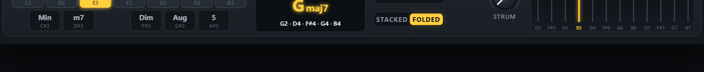

OKTO MULTIWAVE SYNTH · USER MANUAL B
OSCILLATORS B1Wavelet Additive
The oscillator B1 is additive, with a wavelet twist. It is built from wavelet atoms: an atom pattern writes the coefficients of the 11 octave bands, the drawbars set the level of every band, and each band has its own envelope — so the fine detail of a note can die away before its body, as in a real string or bell. The same SCALE FILTER and POSITION window as the subtractive oscillators shape the result. Okto MultiWave Synth has two subtractive oscillators and one additive one and mixes them: this manual is about the additive oscillator; Manual A describes the subtractive pair.
1What this synthesizer is, and what wavelets are
Okto MultiWave Synth is a polyphonic synthesizer whose sounds are made of wavelets instead of sine waves. If you know subtractive synthesis — oscillator, filter, envelope — you already know the shape of its signal path; what is new is what an oscillator is made of, and what its filter takes away. This chapter explains both in plain words, then follows a note from the oscillators to the output. The chapters after it are the hands-on guide and the reference.
What is a wavelet?
A steady sound repeats a cycle, and the classic way to describe a cycle is Fourier's: a sum of sine waves, the harmonics, each lasting the whole cycle. Additive synthesis adds such sines, and an ordinary filter is a gain for each frequency. A sine knows exactly which frequency it is, but not where in the cycle: it is everywhere at once.
A wavelet is a short wave that starts, wiggles a few times and dies away: it lives in one place. A wavelet description builds the cycle from copies of one such shape, called atoms, that differ in two ways only: their scale (their size; each scale is half as long as the one before, one octave finer) and their position in the cycle. One atom is one wavelet at one scale and one position, so it is localised in frequency (its octave) and in time (its place in the cycle) — which a sine cannot be.
In this instrument one cycle is 2048 samples and has 11 scales, called bands. Band 1 holds one atom as long as the cycle, band 2 two atoms half as long, band 3 four, and so on up to band 11 with 1024 atoms two samples apart: 2047 atoms in all. A band covers about one octave of harmonics — band 1 the fundamental, band 2 the 2nd harmonic, band 3 harmonics 3–4, band 4 harmonics 5–8 … — and the cycle is stretched to the pitch of the note, so the bands follow the note.
The discrete wavelet transform (DWT) finds how much of each atom a cycle contains: with a pair of short filters (the wavelet) it splits the cycle into a coarse half and a detail half, keeps the detail as the atoms of the finest band, and repeats on the coarse half. The inverse transform adds the atoms back up and returns the cycle exactly. Between the two you can change the atoms — silence a whole band, keep only the strongest, turn some up — and what comes out is the same cycle with exactly that change.
That is the whole trick of the instrument. A scale filter does not cut frequencies: it turns bands — octaves — up and down; and because atoms have a place, it can also act on one part of the cycle only. The shape of the atom, the wavelet itself, colours what the filter leaves.
The seven wavelets
Every oscillator has its own WAVELET: the shape of its atoms. Taps is the length of the wavelet's filter, the number of samples an atom spans at the finest scale; vanishing moments is how many smooth shapes it ignores (1: a constant, 2: also a straight ramp …). The more it has, the fewer fine atoms a smooth wave needs: a sawtooth analysed with Daubechies 8 has only 96 non-zero atoms out of 2047, because the ramp makes no fine atoms and only its jump does. Short wavelets are precise in time and sound sharper; long ones separate the octaves cleanly. The wavelet chooses the atom draws them.
| Wavelet | Taps | Vanishing moments | What you hear |
|---|---|---|---|
| Haar | 2 | 1 | A square step: sharp and digital. Its atoms are square waves, so a square wave is a single atom of it. |
| Daubechies 2 | 4 | 2 | Short and lopsided: gritty, a little metallic. |
| Daubechies 4 | 8 | 4 | A good all-rounder with mild, asymmetric ringing. |
| Daubechies 8 | 16 | 8 | Longer and smoother: filter sweeps start to sound analogue. |
| Symlet 8 | 16 | 8 | The same length and smoothness as Daubechies 8, but nearly symmetric: cleaner, more balanced edges. |
| Coiflet 3 | 18 | 6 | Nearly symmetric and very smooth for its length. |
| Daubechies 20 | 40 | 20 | Long and almost sine-like: each band is close to a pure octave of harmonics, the most "Fourier-like" of the seven. |
How the synthesizer works
Every note takes one voice. A voice has three oscillators — A1, A2 and B1 — a sub oscillator, a conventional filter and an amplifier; the effects are shared by all the voices. The three oscillators make their cycle out of atoms in two different ways, and the levels in OSC MIX decide how much of each you hear (a new patch plays A1 alone).
- A1 and A2 are subtractive (details). They start from a classic wave — saw, square, pulse, triangle, sine or a noise cycle — analyse it with their wavelet and keep every band as a separate layer. SPARSITY keeps only the strongest atoms and silences the rest, as a lossy codec does. SOURCE PHASE, WIDTH (the pulse width or the triangle's skew) and WAVELET MORPH change what the atoms see: the transform is not shift-invariant, so the same wave moved inside the cycle, or seen through another wavelet, is made of other atoms, and the filter, SPARSITY and the window then act on it differently. The SCALE FILTER finally gives each band a gain — low-pass, high-pass, band-pass or band-reject, with a slope, a resonance, key tracking, an envelope and velocity — and the POSITION window confines it to one part of the cycle.
- B1 is additive (details). It analyses nothing: an atom pattern (ramp, mirror, alternate, Walsh, impulse or random) writes the atoms directly, an inverse transform turns every band into a layer, and 11 drawbars — one per band, as on an organ but with octave bands instead of harmonics — set the level of each band, TILT sloping them. Every band has its own envelope (SCALE ATTACK, SPREAD, BODY, BRIGHT, SCALE SUSTAIN), so the fine detail of a note can arrive late and die before its body, as in a real string or bell. The same SCALE FILTER and POSITION window shape the result.
- The layers are played, not recomputed. The transform runs when you change something that alters the atoms (the wave, the wavelet, SPARSITY, the pattern …), in the background and with a crossfade. Every voice then reads the 11 layers like wavetables at the pitch of the note and multiplies each one by a gain: those 11 gains are what the SCALE FILTER sets, recomputed every 32 samples, so a sweep is smooth.
- The sub oscillator is one sine, triangle or square, one or two octaves below the note, once per voice, outside the scale filters.
After the mix the voice goes through a conventional FILTER, a four-pole (24 dB per octave) resonant low-pass with its own envelope and two characters: LADDER (dark, gritty) and OTA (rounder, smoother). It cuts frequencies, where the SCALE FILTERs cut scales: use both. It is open by default. The AMP ENVELOPE and the velocity then shape the voice. UNISON stacks up to 4 detuned copies of every oscillator, spread across the stereo field, and up to 16 voices can sound at once (Voice, filter and effects).
The voices are added and go through SATURATION, a triple CHORUS, a ping-pong DELAY and a REVERB; the master VOLUME, an output guard and a soft limiter keep the result below 0 dBFS (Effects).
Modulation
There are three envelopes: the AMP ENVELOPE (loudness), the MOD ENVELOPE (it moves the cutoff of every scale filter, and the wavelet morph) and the FILTER ENVELOPE (the cutoff of the voice FILTER); each oscillator also has its own envelope and a pitch envelope (Envelopes). LFO 1 moves the pitch (vibrato), the scale cutoff, the window position, the wavelet morph, SPARSITY and the resonance. LFO 2 and LFO 3 each move one control of your choice (TARGET) — any control of the scale filters, the windows, the wavelet oscillators or the voice FILTER — in every oscillator at once (LFO 1, LFO 2 and LFO 3).
When an LFO moves a wavelet control — a scale cutoff, the resonance, SPARSITY, the window, the source phase, the morph between two wavelets, the drawbar tilt … — the harmonics are re-coupled according to the wavelet, and the timbre swims in a way an ordinary filter sweep cannot. That is SuperModulation, and the first category of the presets (15 sounds) is made of it: see SuperModulation.
Playing it, and choosing sounds
CHORD MODE turns the keyboard into a chord harp: one octave of keys chooses the chord type, and every key above it plays the whole chord with one finger, with a bass note if you like (Chord mode). The TUNING switch gives the keyboard the quarter tones of Arabic music and the 53 commas of Turkish music, with a MAQAM and a TONIC (Oriental keyboard).
The instrument opens on AA · Flint Ripple Haze. There are 237 presets, all kept by their author, OktoPierre, after his own listening: TOP Sounds first, then the 12 categories. Click the name in the preset box to open the preset browser; in the plug-in it shows the author's stars at the right of every sound. Your own sounds go to the user bank (SAVE PRESET), and EXPORT / IMPORT carry them as files (Presets).
This is Manual B: it describes the additive oscillator B1 in detail (The additive oscillator); Manual A describes the subtractive oscillators A1 and A2. To start sounding at once, go to the Quick start.
2Quick start
From closed to sounding in a few steps — pick the column for the version you use.
Web app BROWSER
- Double-click
web/index.htmlto open it in Chrome or Edge (Firefox also works). No installation and no web server are needed — or open the page of the project:pierrearnaudguyot.github.io/Okto-MultiWave-Synth. - Click Play the synth in the welcome window (or Run the demo for a tour of the presets): browsers only allow sound after a click. The status bar turns green: Audio on.
- The app opens on AA · Flint Ripple Haze. Play with the mouse on the keyboard, the digit keys 1 … 0, the letter row A S D F …, or a MIDI keyboard.
- Click the folder tabs OSC1 A1 OSC2 A2 OSC3 B1 under the header to see each oscillator's cards. The tabs only choose the panel shown: what you hear is set by the three levels in the OSC MIX card (a lit dot on a folder tab says the oscillator is heard).
- Click the folder tab OSC3 B1, raise B1 in OSC MIX and lower A1 to hear the additive oscillator alone. Pull the drawbars down one by one from the right: the sound loses brightness band by band. Then click the PATTERN buttons to hear the other atom patterns.
Ableton Live VST3 / VST2
- Download the plug-in zip from its release page (the web app's DOWNLOAD VST button opens it) and unzip it. Copy the whole
OktoMultiWaveSynth.vst3folder into your VST3 folder (C:\Program Files\Common Files\VST3;vst\install.batdoes it and asks for administrator rights) or into your VST2 plug-in folder. - In Live open Preferences → Plug-ins, switch on Use VST3 Plug-in System Folders (or Use VST2 Plug-in Custom Folder) and click Rescan.
- In the browser open Plug-ins → OktoPierre → Okto MultiWave Synth and drag it onto a MIDI track. A new instance starts on AA · Flint Ripple Haze.
- Arm the track and play a MIDI keyboard, or press M to use Live's Computer MIDI Keyboard. The panel is the same as in the web app.
Want to hear what it can do first? ▶ DEMO (web app) plays Beethoven's Appassionata while the presets change every few seconds.
3The panel
The panel is the same in the web app and the plug-in, apart from a few buttons (the web app's DEMO and DOWNLOAD VST, the plug-in's size button, SAVE PRESET and the SYNC buttons of the tempo sync). From top to bottom: the header; the strip of three folder tabs with the plate under it that holds the cards of the oscillator shown (WAVELET, SCALE FILTER, POSITION, TUNE · OWN ENVELOPE · PITCH ENVELOPE) and, at the top right and common to every oscillator, OSC MIX and the SCOPE of the whole sound; the voice FILTER, the AMP ENVELOPE and the MOD ENVELOPE; LFO 1, LFO 2/3 and VOICE; EFFECTS and the PLAY card (CHORD MODE, BASS, TUNING); the keyboard row. With CHORD MODE on, the chord-harp card appears below and the window grows. The credit line “By OktoPierre · 1.0.5 · GPL v3” sits under the wheels.

- 1Folder tabs — OSC1 A1 · OSC2 A2 · OSC3 B1: which oscillator's cards are shown on the plate; a lit dot = it is heard (the sound is set by OSC MIX).
- 2Preset browser — ◀ ▶ step through the presets; click the name for the list.
- 3DOWNLOAD VST / SAVE PRESET — the web app links to the plug-in; the plug-in has SAVE PRESET here.
- 4MANUAL — this manual on an A tab, the other one on a B tab.
- 5VOLUME and meter — master level and stereo peak meter.
- 6PATTERN — the atom pattern that writes the coefficients.
- 7Drawbars 1–11 — the level of each of the 11 bands.
- 8ATOM SHAPE · WAVELET — one atom of the selected wavelet; the wavelet below it.
- 9TILT · SEED — dB per band across the drawbars; the seed of the RANDOM pattern.
- 10Band envelope — SCALE ATTACK, SPREAD, BODY, BRIGHT, SCALE SUSTAIN: the time behaviour of each band.
- 11OSC MIX — three levels, one per oscillator; below them the SUB OSC.
- 12SCOPE · SCALOGRAM — one cycle of the whole sound (every oscillator that plays) and its atoms in the 11 bands.
- 13SCALE FILTER — a gain for each wavelet band: type, cutoff, slope, resonance, key tracking, envelope, velocity.
- 14POSITION — confines the filter or the detail to part of the cycle.
- 15TUNE · OWN ENVELOPE · PITCH ENVELOPE — the oscillator's own pitch, its own loudness envelope and its pitch envelope.
- 16FILTER — a 24 dB resonant low-pass in every voice (LADDER or OTA), with its own envelope; open by default.
- 17AMP ENVELOPE — loudness of the whole sound.
- 18MOD ENVELOPE — moves the cutoff of every oscillator by its ENV AMT.
- 19LFO 1 — pitch, cutoff, position, wavelet morph, sparsity, resonance and envelope-to-wavelet.
- 20LFO 2 / LFO 3 — each moves one control chosen by TARGET: any scale-filter, wavelet or FILTER control, in every oscillator.
- 21VOICE — portamento, octave, tuning, polyphony, glide, unison.
- 22EFFECTS — saturation, chorus, ping-pong delay and reverb.
- 23CHORD MODE · BASS — shows the chord-harp card and turns the keyboard into chords; BASS adds the low note.
- 24TUNING — the three-position switch of the oriental keyboard: Western, Arabic, Turkish.
- 25Wheels · keyboard — pitch bend, modulation; five octaves.
The header
| Control | What it does |
|---|---|
| ▶ DEMO (web app) | Plays the demo, Beethoven's Appassionata: a tour of the presets, a new one about every 4 seconds. It says STOP while it runs. |
| Folder tabs | The strip of three tabs under the header — OSC1 A1 · SUBTRACTIVE and OSC2 A2 · SUBTRACTIVE (yellow), OSC3 B1 · ADDITIVE (blue) — chooses the oscillator whose cards are shown on the plate below it; a lit dot says the oscillator is heard. It does not change the sound, and does not mark a preset as modified. |
| Preset box | The name of the sound; a dot after it means it was modified since it was loaded. ◀ ▶ step; a click opens the preset browser. |
| DOWNLOAD VST · SAVE PRESET | The web app's button opens the plug-in's release page; in the plug-in the same place holds SAVE PRESET. |
| MANUAL | Opens the manual of the oscillator shown — Manual A on A1 or A2, Manual B on B1; each links to the other. |
| VOLUME · meter | Master level (−36 … +6 dB) and the stereo peak meter. |
Working with the controls
| Gesture | Effect |
|---|---|
| Drag up / down | Changes the value; a full sweep takes about 180 pixels (120 on a drawbar). |
| Shift + drag | Five times finer. |
| Mouse wheel | Steps of 1 % of the range (0.2 % with Shift); one step on stepped controls. |
| Double-click, or Ctrl + click | Resets the control to its default. |
| Hover | The label under a knob shows its value with its unit. |
| Right-click (web app) | MIDI learn: then move a knob or fader on your controller (Esc cancels, Delete unlinks). |
| Greyed-out control | Has no effect with the current settings (WIDTH unless the wave is PULSE or TRI, SEED unless the pattern is RANDOM, the sub oscillator's OCT and SHAPE while its LEVEL is 0). |
4Three oscillators
Okto MultiWave Synth plays up to three oscillators in every voice: A1 and A2 (wavelet subtractive) and B1 (wavelet additive). A new patch plays A1 alone; the three levels in the OSC MIX card decide which oscillators sound and how loud. Each oscillator is a small instrument of its own — its tone, its SCALE FILTER, its POSITION window, its tuning, its own envelope and its pitch envelope — while the AMP ENVELOPE, MOD ENVELOPE, LFOs, VOICE settings, effects and sub oscillator are shared by the whole voice.
- One panel at a time. The folder tabs OSC1 A1 OSC2 A2 OSC3 B1 under the header choose the oscillator: they show one oscillator's cards on the plate (yellow for A1 and A2, blue for B1) while the other two keep their settings and keep sounding. A lit dot on a folder tab says its oscillator is heard (its level is above 0). Switching a tab never changes the sound and never marks a preset as modified. OSC MIX and the SCOPE are common to every oscillator, so they stay in place at the top right whatever tab is shown; the scope and the scalogram draw one cycle of the whole sound (every oscillator that plays, and the sub oscillator, at C4).
- Levels cost nothing at 0. An oscillator whose level is 0 is not computed and its wave tables are not even built, so presets that use two oscillators cost about twice one — not three times. A level is smoothed over 20 ms, so it can be moved while playing.
- Most presets use two oscillators or more (the 21 TOP Sounds that come from the Wavelet Synthesizer have one or two). The type at the start of the name of the other presets —
AA,AB,AAB— says which.
OSC MIX and SUB OSC
| Control | Range · default | What it does | Tip |
|---|---|---|---|
| A1host: A1 Level | 0 – 100 %default 100% | The level of oscillator A1 (subtractive). 100 % on a new patch. | The tone card of each oscillator has the same knob. |
| A2host: A2 Level | 0 – 100 %default 0% | The level of A2 (subtractive). | A second subtractive voice: a detuned copy, an octave, a different wave or filter. |
| B1host: B1 Level | 0 – 100 %default 0% | The level of B1 (additive). | Often the body, the choir or the shimmer on top of the subtractive oscillators. |
| LEVELhost: Sub Level | 0 – 100 %default 0% | The sub oscillator: a sine, triangle or square one or two octaves below the note, unfiltered, once per voice. | Adds weight; it does not go through the scale filters. |
| OCThost: Sub Octave | −1 · −2default −1 octave | −1 or −2 octaves. | |
| SHAPEhost: Sub Shape | SIN · TRI · SQRdefault Sine | Sine, triangle or square. |
TUNE, OWN ENVELOPE and PITCH ENVELOPE
The wide card at the bottom of the plate belongs to the oscillator shown (the folder tab says which). It is what turns three oscillators into a sound with a front and a body.
| Control | Range · default | What it does | Tip |
|---|---|---|---|
| OCTAVEhost: A1 Octave | −3 … +3default 0 | Transposes the oscillator by whole octaves. | A2 an octave down under A1 is the classic "saw + sub saw". |
| SEMIhost: A1 Semitones | −12 … +12 semitonesdefault 0 st | Transposes by semitones. | +7 gives a fifth; +12 an octave. |
| FINEhost: A1 Fine Tune | −100 … +100 centsdefault 0 ct | Fine tuning in cents. | ±6–15 cents between two oscillators gives a beating, chorused sound. |
| OWN ENVhost: A1 Own Envelope | OFF · ONdefault Off | Switches the oscillator's own envelope on. The oscillator is then multiplied by its own ADSR as well as the AMP ENVELOPE, so it can only be shorter than the voice: a short decay makes it a percussive attack (a click, a pluck, a breath); a slow attack makes it fade in under the others. | The ADSR display next to it draws the shape. |
| ATTACKhost: A1 Env Attack | 1 ms – 10 sdefault 1.0 ms | Attack of the own envelope (linear). | |
| DECAYhost: A1 Env Decay | 1 ms – 10 sdefault 250 ms | Decay to the sustain level (exponential; the time to fall by 60 dB). | 20–80 ms for a click, 200–600 ms for a pluck. |
| SUSTAINhost: A1 Env Sustain | 0 – 100 %default 0% | Sustain level. | 0 % makes a one-shot attack that dies by itself. |
| RELEASEhost: A1 Env Release | 1 ms – 10 sdefault 150 ms | Release after the key is released. | |
| PITCH ENVhost: A1 Pitch Env Amount | −48 … +48 semitonesdefault 0 st | The pitch envelope: the oscillator starts this many semitones away from the note and glides to it (negative = it starts below). | +12 … +30 with a short TIME is a kick or a zap; a small value is a "blip" on every note. |
| TIMEhost: A1 Pitch Env Time | 5 ms – 2 sdefault 80 ms | How long the glide takes to come back to the note: exponential, the time to fall by 60 dB (half of the distance is covered in about a tenth of it). |
The table shows the ranges and defaults of A1's controls; A2 and B1 have the same ones. The own envelope has no effect while its switch is off.
Ideas, and presets to study
| Idea | How | Look at |
|---|---|---|
| A percussive attack | One oscillator with its own envelope: a noise cycle played low (OCTAVE −2 or −3) through a high-pass at band 6–9, DECAY 20–40 ms, SUSTAIN 0; the other oscillator is the body. | AA · Orbit Drum, AA · Kick, AA · Snare |
| A pitch drop | A sine with PITCH ENV +12 … +30 semitones and a TIME of 30–60 ms. | AA · Orbit Drum, AA · Kick, AB · Tom |
| A fat pair | Two oscillators of the same kind a few cents apart, or an octave apart with different cutoffs. | AA · Analog Cloud, AA · Orbit Bloom, AA · Sweep of Silk |
| Additive body, subtractive attack | B1 for the body (drawbars, atoms), A1 as a short, bright start. | AB · Bloom of Timber, AB · Knock Wah, AB · Resonance Storm |
| Two LFOs on the wavelet | LFO 2 on one wavelet control (the SPARSITY, the window position, the SOURCE PHASE …), LFO 3 on another, at unrelated speeds; then set their amounts to 0 one at a time to hear what each does. | AA · Orbit Pad, AA · Sweep of Pixel, AA · Tide Lute |
| A real filter on top | The voice FILTER with an envelope: a low cutoff, some RESO and a positive ENV AMT with a short decay is the classic synth bass or pluck; aim LFO 3 at FILTER CUTOFF for a wah. | AA · Hollow Bass, AB · Ghost Foundation, AA · Milk Sweep Growl |
5The additive oscillator B1
A B oscillator builds its sound from atoms: a pattern writes the coefficients of the 11 bands, the drawbars (with TILT) set their levels, and a scale envelope gives every band its own time behaviour — before the oscillator's filter, window, own envelope and the AMP ENVELOPE shape the whole.
Every oscillator plays one cycle of 2048 samples, analysed by a periodic wavelet transform into 11 bands: band b has 2b−1 atoms and covers about one octave of harmonics (band 1 the fundamental, band 2 the 2nd harmonic, band 3 harmonics 3–4, band 4 harmonics 5–8 …). The analysis is pitch-synchronous, so the bands follow the note. To keep high notes alias-free each band is stored in octave-wise band-limited versions: the finest bands only exist on low notes — at middle C only bands 1–7 are played, at C2 bands 1–9. The SCALOGRAM draws the atoms of the 11 bands of the oscillator shown (B1 at the bottom).
| Control | Range · default | What it does | Tip |
|---|---|---|---|
| PATTERNhost: Atom Pattern | RAMP · MIRROR · ALT · WALSH · IMPULSE · RANDOMdefault Ramp | The atom pattern that writes the coefficients: RAMP, MIRROR, ALT, WALSH, IMPULSE, RANDOM. Each band layer is peak-normalised, so the drawbars set the real level of a band. | RAMP + TILT −6 dB/band with Haar is a sawtooth staircase; MIRROR is hollow and organ-like; IMPULSE puts all the detail at 0°; RANDOM is bell-like. |
| SEEDhost: Random Seed | 0 – 99default 1 | Only for the RANDOM pattern: which random atoms. | Different seeds are different bells. |
| TILThost: Tilt | −24 … +12 dB/banddefault −6.0 dB/band | Slopes the drawbars: dB per band, positive = brighter, negative = darker, applied on top of the drawbars. | A quick way to change the brightness of a whole sound. |
| 1host: Band 1 Level | 0 – 100 %default 100% | The drawbars 1 … 11: the level of each band (band 1 at the left). The level is normalised by max(1, the sum of the bars), so pulling bars down makes the sound darker and quieter. | Hover a bar to read its band. |
| ATTACKhost: Scale Attack | 1 ms – 5 sdefault 5.0 ms | SCALE ATTACK: how long the finer bands take to arrive after the body. | A slow attack on the high bands makes a bowed or breathy start. |
| SPREADhost: Attack Spread | −100 … +100 %default 0% | SPREAD: moves the band timing up or down the bands (positive: the fine bands are late and die early; negative: the other way). | |
| BODYhost: Body Decay | 10 ms – 20 sdefault 20.00 s | BODY: how long the low bands last. | With BRIGHT shorter than BODY the fine detail dies before the body, as in a real string. |
| BRIGHThost: Bright Decay | 10 ms – 20 sdefault 20.00 s | BRIGHT: how long the high bands last. | |
| SUSTAINhost: Scale Sustain | 0 – 100 %default 100% | SCALE SUSTAIN: the level the bands settle on while the key is held. | |
| WAVELEThost: B1 Wavelet | Haar · DB2 · DB4 · DB8 · Sym8 · Coif3 · DB20default Daubechies 4 | The shape of the atoms. | Changing it while holding a note crossfades. |


The wavelet chooses the atom
Each oscillator has its own WAVELET (the step control under the atom picture): seven classic wavelets from the 2-tap Haar step to the 40-tap Daubechies 20. Short wavelets are precise in time — sharp edges, crisp POSITION window borders — but their bands overlap; long wavelets separate the octaves cleanly. For a clean, organ-like staircase choose Daubechies 8 or longer; for hard, chip-like bands Haar.

| Wavelet | Taps | Character |
|---|---|---|
| Haar | 2 | Each band is a square-wave pattern: hard, bright, chip-like. RAMP with TILT −6 dB/band builds an exact sawtooth staircase. |
| Daubechies 2 | 4 | Short and lopsided: buzzy, slightly metallic band timbres. |
| Daubechies 4 | 8 | A good all-rounder; bands still carry a few neighbouring harmonics. |
| Daubechies 8 | 16 | Smooth bands; the octave structure becomes clear and organ-like. |
| Symlet 8 | 16 | Like Daubechies 8 but almost symmetric: a little rounder. |
| Coiflet 3 | 18 | Nearly symmetric and very smooth for its length. |
| Daubechies 20 | 40 | Each RAMP band is practically a sine at its octave: the cleanest drawbar-organ sound. |
WAVELET MORPH builds every oscillator with a second wavelet too (WAVELET 2) and moves between the two with MORPH, LFO 1 (its WAVELET knob) and the mod envelope (ENV>WAV); it acts on each oscillator that plays and is heard where the wavelet shapes the sound.
6Scale filter and position window
The SCALE FILTER multiplies the band levels set by the drawbars, the tilt and the scale envelope: think of it as a second set of drawbars you can move with an envelope, an LFO, velocity and the keyboard. Its default cutoff of 12 is open. The level normalisation of the drawbars is computed before the filter, so closing the filter really makes the sound darker and quieter. Every oscillator has its own filter and window; the tabs show the cards of the oscillator selected. The table lists the controls of B1; the other oscillators of the same kind have the same ones.
SCALE FILTER
| Control | Range · default | What it does | Tip |
|---|---|---|---|
| TYPEhost: B1 Filter Type | LOW-PASS · HIGH-PASS · BAND-PASS · BAND-REJdefault Low-pass | Shape of the gain curve over the bands: LOW-PASS keeps the coarse bands, HIGH-PASS the fine ones, BAND-PASS about one band around the cutoff, BAND-REJ removes the band at the cutoff. | Band-pass on a low cutoff gives thin, nasal tones. |
| CUTOFFhost: B1 Cutoff | 0 – 12default band 12.0 | Where the filter acts, in bands: 1 = the fundamental, 11 = the finest atoms, 12 = beyond them (a low-pass is fully open). | Default 12 = open. |
| SLOPEhost: B1 Slope | 6 – 96 dB/banddefault +24.0 dB/band | How steeply the bands beyond the cutoff are attenuated; one band ≈ one octave, so 24 dB/band behaves like a 24 dB/octave filter. For BAND-REJ it sets the notch width. | Steep slopes act like faders that switch bands on and off. |
| RESOhost: B1 Resonance | 0 – 24 dBdefault 0.0 dB | Boosts the bands around the cutoff by up to 24 dB. A band boost, not feedback: it never self-oscillates. | Resonance adds level: watch the meter. |
| KEY TRKhost: B1 Key Tracking | 0 – 100 %default 100% | 100 %: the cutoff follows the note. 0 %: it stays at a fixed frequency (C4 = 261.63 Hz). | 50 % is the familiar "darker as you go up". |
| ENV AMThost: B1 Envelope Amount | −11 … +11 bandsdefault 0.0 bands | How far the MOD ENVELOPE moves this oscillator's cutoff: −11 … +11 bands at its peak. | Each oscillator has its own amount: the same envelope can open one and close another. |
| VEL AMThost: B1 Velocity Amount | −6 … +6 bandsdefault 0.0 bands | Velocity → cutoff: the shift is amount × (velocity − 1). | +2 … +3 bands: soft notes darker. |

The cutoff actually used by a voice, recomputed every 32 samples: cutoff = CUTOFF + ENV AMT × mod envelope + LFO 1 CUTOFF × LFO 1 (+ LFO 2 and LFO 3 aimed at CUTOFF) + VEL AMT × (velocity − 1) + (1 − KEY TRK) × log₂(261.63 Hz ÷ note frequency). (The voice FILTER of the next chapters is another filter, on frequencies: do not mix them up.)
POSITION window
Atoms live at definite places in the cycle, so a B oscillator can decide where the detail is allowed to exist: coarse band 1 everywhere, bands 2–11 only in part of the cycle — a moving "focus", a pulse-width-like effect locked to the pitch.
| Control | Range · default | What it does | Tip |
|---|---|---|---|
| POSITIONhost: B1 Position | 0° – 360°default 0° | Centre of the window inside the cycle, 0° … 360°. | With IMPULSE all the detail sits at 0°. |
| WIDTHhost: B1 Window Width | 5 – 100 %default 50% | How much of the cycle the window covers. | Narrow windows are automatically widened on high notes (no aliasing). |
| DEPTHhost: B1 Window Depth | 0 – 100 %default 0% | How strongly the window confines the detail: 0 % = off; 100 % = bands 2–11 exist only inside the window, outside it only band 1 sounds. | LFO 1 and LFO 2 can move the window. |

7Envelopes
Two ADSR envelopes run for every voice, plus the own envelope and pitch envelope of each oscillator (see TUNE, OWN ENVELOPE and PITCH ENVELOPE). Attacks are linear; decays and releases are exponential (the time given is the time to fall by 60 dB).
AMP ENVELOPE
| Control | Range · default | What it does | Tip |
|---|---|---|---|
| ATTACKhost: Amp Attack | 1 ms – 10 sdefault 3.0 ms | Rise from silence to full level. | 1–5 ms is click-free for most sounds; 0.3–1 s for pads. |
| DECAYhost: Amp Decay | 1 ms – 10 sdefault 400 ms | Fall from full level to the sustain level. | For plucks set SUSTAIN 0 % and use DECAY as the note length. |
| SUSTAINhost: Amp Sustain | 0 – 100 %default 80% | Level held while the key (or the sustain pedal) is down. | |
| RELEASEhost: Amp Release | 1 ms – 10 sdefault 300 ms | Fade after the key is released. The voice is freed at −100 dB. | Long releases overlap: raise VOICES for pads. |
| VELOCITYhost: Amp Velocity | 0 – 100 %default 50% | How much velocity sets the loudness. 0 % = every note equally loud. | The computer keyboard plays at velocity 80 %. |
MOD ENVELOPE
It moves the cutoff of every oscillator by that oscillator's ENV AMT (so with ENV AMT at 0 it does nothing there), and the WAVELET MORPH by ENV>WAV. It ignores velocity — use VEL AMT for that.
| Control | Range · default | What it does | Tip |
|---|---|---|---|
| ATTACKhost: Mod Attack | 1 ms – 10 sdefault 3.0 ms | Attack of the modulation envelope. | A slow mod attack gives brassy swells. |
| DECAYhost: Mod Decay | 1 ms – 10 sdefault 500 ms | Decay to the mod sustain level. | |
| SUSTAINhost: Mod Sustain | 0 – 100 %default 30% | Mod level held while the key is down. | |
| RELEASEhost: Mod Release | 1 ms – 10 sdefault 500 ms | Mod release. |
8LFO 1, LFO 2 and LFO 3
Three LFOs: LFO 1, and LFO 2 and LFO 3, which share a card (its two tabs, LFO 2 and LFO 3, show one or the other; a lit dot on a tab says that LFO is on, its AMOUNT is not 0). They are shared by all voices and oscillators and run freely (not restarted by new notes): in a chord every voice moves together. For a movement that starts with each note use the MOD ENVELOPE.
LFO 1
| Control | Range · default | What it does | Tip |
|---|---|---|---|
| SHAPEhost: LFO 1 Shape | SINE · TRI · SAW · SQR · S&Hdefault Sine | SINE, TRI, SAW, SQR or S&H (sample & hold: a new random value per cycle). | |
| RATEhost: LFO 1 Rate | 0.05 – 20 Hzdefault 4.0 Hz | Speed, one cycle per 20 s to 20 per second. In the plug-in, with SYNC on, a note value at the host's tempo. | 5–6 Hz for vibrato. |
| PITCHhost: LFO 1 to Pitch | 0 – 100 centsdefault 0 ct | Vibrato depth in cents (the mod wheel adds up to 50 more). | |
| CUTOFFhost: LFO 1 to Cutoff | 0 – ±6 bandsdefault ±0.0 bands | Moves the cutoff of every oscillator by up to ± this many bands. | |
| POSITIONhost: LFO 1 to Position | 0 – ±180°default ±0° | Moves the POSITION window of every oscillator by up to ± this many degrees. | Only audible where the window's DEPTH is above 0 %. |
| WAVELEThost: LFO 1 to Wavelet Morph | 0 – 100 %default 0% | Moves the WAVELET MORPH. | Needs a WAVELET 2 different from the oscillator's WAVELET. |
| SPARSITYhost: LFO 1 to Sparsity | 0 – 100 %default 0% | Moves the SPARSITY of every subtractive oscillator by up to ± this share of the range: the atoms that are kept come and go, and the timbre swings between a rich tone and a few atoms. | Starts to show where the wavelet is not Haar (a Daubechies 8 saw has only 96 atoms). The tables are built at nine sparsities while this is above 0 %. |
| RESOhost: LFO 1 to Resonance | 0 – 24 dBdefault 0.0 dB | Moves the RESO of every scale filter by up to ± this many dB (kept between 0 and 24 dB): the resonant peak of the filter pulses. | Needs a cutoff inside the sound (bands 3–8) and a little resonance to start from. |
| ENV>WAVhost: LFO 1 to Envelope>Wavelet | 0 – 100 %default 0% | Makes the reach of the MOD ENVELOPE on the WAVELET MORPH (ENV>WAV) swing: ENV>WAV + this amount × LFO 1. | Needs a WAVELET 2 different from the oscillator's WAVELET, and an ENV>WAV above 0 or a MORPH to move. |
LFO 2 and LFO 3
LFO 2 and LFO 3 are the same LFO twice: each moves one control, in every oscillator at once, by the same amount: the one chosen in its TARGET menu — CUTOFF, SLOPE, RESO, KEY TRK, ENV AMT or VEL AMT of the scale filters, POSITION, WIDTH or DEPTH of the windows, the PHASE, SPARSITY or SRC WIDTH of the subtractive oscillators, the TILT, ODD BARS, EVEN BARS or SCALE SUS of the additive ones, the MORPH between two wavelets, or the FILTER CUTOFF or FILTER RESONANCE of the voice FILTER: every control of the wavelet oscillators, of the scale filter and of the voice filter. Each oscillator keeps its own base value; the LFO moves them in step. The two LFOs can aim at different controls (two independent movements) or at the same one (their moves add up). A target acts on every oscillator that has the control, and cannot be limited to one: aim it at a control that only one kind has (SPARSITY, PHASE or SRC WIDTH for the subtractive oscillators; TILT, ODD BARS, EVEN BARS or SCALE SUS for the additive one) to move that kind only.
| Control | Range · default | What it does | Tip |
|---|---|---|---|
| TARGEThost: LFO 2 Target | CUTOFF · SLOPE · RESO · KEY TRK · ENV AMT · VEL AMT · POSITION · WIDTH · DEPTH · PHASE · SPARSITY · SRC WIDTH · TILT · ODD BARS · EVEN BARS · SCALE SUS · MORPH · FLT CUT · FLT RESOdefault Cutoff | What LFO 2 moves (the menu at the right of the three knobs; the mouse wheel steps through it). LFO 3 has the same menu. | LFO 1 already has CUTOFF and POSITION: give LFO 2 another target for two independent movements. |
| SHAPEhost: LFO 2 Shape | SINE · TRI · SAW · SQR · S&Hdefault Sine | The same five shapes as LFO 1, on a knob with five positions after AMOUNT (SINE, TRI, SAW, SQR, S&H; the name of the shape is under the knob; a click steps to the next shape). | |
| RATEhost: LFO 2 Rate | 0.05 – 20 Hzdefault 1.0 Hz | Speed, independent of LFO 1; note values with SYNC in the plug-in. | A rate that does not divide LFO 1's makes the two drift against each other. |
| AMOUNThost: LFO 2 Amount | −100 … +100 %default 0% | How far the target moves: up to ± this share of half its range, kept in range (FILTER CUTOFF: half of its ten octaves, so 30 % is about ± 1.5 octaves). 0 % (the default) switches LFO 2 off. | Start around 20–30 %. |
| TARGEThost: LFO 3 Target | CUTOFF · SLOPE · RESO · KEY TRK · ENV AMT · VEL AMT · POSITION · WIDTH · DEPTH · PHASE · SPARSITY · SRC WIDTH · TILT · ODD BARS · EVEN BARS · SCALE SUS · MORPH · FLT CUT · FLT RESOdefault Cutoff | What LFO 3 moves: the same menu as LFO 2. When both aim at the same control their moves add. | Use LFO 3 for a second control of the wavelet oscillators: LFO 2 on SPARSITY, LFO 3 on the WINDOW position, for instance. |
| SHAPEhost: LFO 3 Shape | SINE · TRI · SAW · SQR · S&Hdefault Sine | The same five waveforms as LFO 1. | |
| RATEhost: LFO 3 Rate | 0.05 – 20 Hzdefault 1.0 Hz | Speed, independent of the two other LFOs; note values with SYNC in the plug-in. | Rates that do not divide each other make the LFOs drift apart. |
| AMOUNThost: LFO 3 Amount | −100 … +100 %default 0% | How far the target moves, as for LFO 2. 0 % (the default) switches LFO 3 off. |
PHASE, SPARSITY and SRC WIDTH (SOURCE WIDTH: the pulse width of a PULSE source or the skew of a TRI one) change what the wavelet transform sees, so the subtractive oscillators' tables are built at several values — 12 phases round the cycle, 9 sparsities from 0 to 100 %, 9 widths from 2 to 98 % (about 1 MB per set) — and each voice crossfades between the two nearest: a smooth scan through the timbres. At AMOUNT 0 nothing extra is built. One kind of scan per oscillator at a time: SPARSITY (from LFO 1, LFO 2 or LFO 3) comes first, then PHASE, then SRC WIDTH. TILT, ODD BARS, EVEN BARS and SCALE SUS move the additive oscillators' drawbars (odd = bands 1, 3, 5 …; even = bands 2, 4, 6 …) and the level their bands decay to; MORPH adds to the WAVELET MORPH position. FILTER CUTOFF moves the cutoff of the voice FILTER (in octaves: the whole range is ten octaves) and FILTER RESONANCE its resonance; either one switches the filter on, even while its own settings are open.
SuperModulation
The idea of the instrument is that every timbre control acts on the scales of one cycle of the wave — and so can an LFO, while the note sounds. Moving the cutoff of a scale filter, the resonance, the SPARSITY, the window, the SOURCE PHASE or the morph between two wavelets does not sweep a Fourier filter: the harmonics are re-coupled according to the wavelet, so the timbre swims in a way an ordinary filter sweep does not. The SuperModulation category of the presets (the first one in the lists, 15 sounds) is made of such sounds: oscillators of different character and LFOs that move several of these controls at unrelated speeds. LFO 2 and / or LFO 3 are on a control in 142 of the 237 factory presets (14 of the 15 SuperModulation ones). Open one, then set the amounts of the LFOs to 0 one by one to hear what each does.
Tempo sync (plug-in only)
In the plug-in a SYNC button belongs to LFO 1, to LFO 2 and to LFO 3 (each has its own) and to the delay. Lit, the RATE (or the delay's TIME) becomes a note value at the host's tempo (120 BPM when the host gives none) and follows its tempo changes. The note values run from 4/1 to 1/32 for the LFOs and 1/32 to 1/1 for the delay (T = triplet, D = dotted). SYNC sets the speed only; the LFO is not restarted on the beat. SYNC is off by default, and the web app has none (a browser page has no tempo).
9Voice, filter and effects
VOICE
| Control | Range · default | What it does | Tip |
|---|---|---|---|
| PORTAMENTOhost: Portamento | OFF · POLY · LEGATOdefault POLY | When notes glide; GLIDE sets how long (0 = nothing glides). POLY: every voice glides from its own previous note, so chord changes glide voice by voice. LEGATO: only while another key is held. | LEGATO for expressive leads, POLY for gliding chords. |
| OCTAVEhost: Octave | −3 … +3default 0 | Transposes the whole instrument by octaves (each oscillator also has its own TUNE). | |
| FINEhost: Fine Tune | −100 … +100 centsdefault 0 ct | Fine tuning in cents. | |
| VOICEShost: Voices | 1 – 16default 8 | Notes sounding at once; 1 = monophonic legato with last-note priority. | Pads need 8 or more. |
| GLIDEhost: Glide | off – 2 sdefault off | Portamento time. | 30–80 ms for leads. |
| UNISONhost: Unison | 1 – 4default 1 | Stacked copies of every note (1–4). | Cost = voices × unison × oscillators. |
| DETUNEhost: Unison Detune | 0 – 50 centsdefault +12 ct | Spread of the unison copies in cents. | 8–15 cents for warmth. |
| STEREOhost: Stereo Width | 0 – 100 %default 70% | Spreads the unison copies across the stereo field. | No effect with UNISON 1. |
When all voices are busy a new note takes the oldest released voice first, then the oldest held one. Each note plays at about −8 dB to leave headroom for chords. A preset can switch mono ↔ poly; a note off always finds its voice.
FILTER
The FILTER card (below the plate, next to the AMP ENVELOPE) is a conventional filter in every voice: a four-pole (24 dB per octave) resonant low-pass that works on the voice after its oscillators are mixed and before its AMP ENVELOPE. It cuts frequencies, on top of the SCALE FILTERs, which cut scales. Two characters, chosen with the LADDER | OTA switch: LADDER saturates at every stage — dark and gritty, and the resonance thins the low end as it rises; OTA saturates only the input of its feedback loop and keeps part of the low end — rounder and smoother. The cutoff a voice uses is CUTOFF × 2ENV AMT × 8 × FILTER ENVELOPE + KEY TRK × (note − C4) ÷ 12 + LFO 2 + LFO 3 (the exponent is in octaves). It is open by default (CUTOFF at its maximum, no resonance, no drive, no envelope): then it is not even computed and costs nothing. Turning any of its controls, or aiming an LFO at it, switches it on.
| Control | Range · default | What it does | Tip |
|---|---|---|---|
| TYPEhost: Filter Type | LADDER · OTAdefault Ladder 24 dB | LADDER: every stage saturates, the resonance takes the low end away; OTA: only the input of the loop saturates, the low end is partly kept. | LADDER for gritty basses and leads, OTA for rounder pads and keys. |
| CUTOFFhost: Filter Cutoff | 20 – 20000 Hzdefault 20000.0 Hz | The frequency above which the sound is attenuated (24 dB per octave); exponential scale, 20 Hz to 20 kHz. At the top it is open. | Play a note and sweep it; add RESO for the classic wah. |
| RESOhost: Filter Resonance | 0 – 100 %default 0% | Feeds the output back to the input: a peak at the cutoff. At 100 % the filter is just above the point where it sings by itself. | The resonance adds level: watch the meter. |
| DRIVEhost: Filter Drive | 0 – 100 %default 0% | Saturates the sound before the filter (a tanh, level-compensated): 0 % = clean. | With a resonance it makes the filter growl. |
| KEY TRKhost: Filter Key Tracking | 0 – 100 %default 0% | How much the cutoff follows the note (100 % = one octave of cutoff per octave of pitch, from C4). | High notes stay as bright as low notes. |
| ENV AMThost: Filter Envelope Amount | −100 … +100 %default 0% | How far the FILTER ENVELOPE (the ADSR next to it) moves the cutoff: up to ± 8 octaves. Negative values close the filter as the envelope rises. | Combine a moderate cutoff with a positive ENV AMT and a short decay for the classic "pluck" of a synth bass. |
| ATTACKhost: Filter Env Attack | 1 ms – 10 sdefault 5.0 ms | Attack of the FILTER ENVELOPE. | A slow attack opens a pad. |
| DECAYhost: Filter Env Decay | 1 ms – 10 sdefault 300 ms | Decay to the sustain level. | |
| SUSTAINhost: Filter Env Sustain | 0 – 100 %default 50% | Level the envelope holds while the key is down (0 % = the filter closes again, 100 % = it stays open). | |
| RELEASEhost: Filter Env Release | 1 ms – 10 sdefault 300 ms | Release. |
Each voice has its own filter and its own FILTER ENVELOPE, started by its note; the cutoff glides smoothly from block to block, so it does not zipper. LFO 2 and LFO 3 can move the CUTOFF (FILTER CUTOFF) and the RESONANCE (FILTER RESONANCE) of every voice together.
EFFECTS
After the voice FILTER (above), in the order of the sound: saturation → string-machine triple chorus → ping-pong delay → reverb → DC blocker → master volume → soft limiter (never above 0 dBFS).
| Control | Range · default | What it does | Tip |
|---|---|---|---|
| DRIVEhost: Drive | 0 – 100 %default 0% | Saturation: a smooth tanh soft-clipper driven by up to +24 dB, level-compensated. 0 % = bypassed. | 20–40 % thickens basses. |
| CHORUShost: Chorus | 0 – 100 %default 0% | Chorus amount: three delay lines swept by a slow and a fast LFO, 120° apart, spread left / centre / right. | Widens pads, strings and organs. |
| RATEhost: Chorus Rate | 0.1 – 3 Hzdefault 0.70 Hz | Speed of the chorus LFOs. | |
| DEPTHhost: Chorus Depth | 0 – 100 %default 60% | Depth of the sweep. | |
| TIMEhost: Delay Time | 10 ms – 1 sdefault 350 ms | Delay time (up to 4 s). Changing it while echoes ring makes them glide in pitch. With SYNC on in the plug-in, a note value. | |
| FEEDBACKhost: Delay Feedback | 0 – 90 %default 35% | Feedback: more repeats. The echoes alternate left and right and get darker. | Above 70 % the repeats last for seconds. |
| DLY MIXhost: Delay Mix | 0 – 100 %default 0% | Level of the echoes. | |
| SIZEhost: Reverb Size | 0 – 100 %default 60% | Reverb decay, from a small room to a long hall. | |
| REV MIXhost: Reverb Mix | 0 – 100 %default 0% | Level of the reverb. | 15–25 % for most sounds; 40 % + for pads. |
| VOLUMEhost: Master Volume | −36 … +6 dBdefault −3.0 dB | Master output level, the small knob in the header. | Lower it when the meter sits at the top. |
The smoothing of the delay, its filter, the master level and the reverb damping have the same time constants at 44.1, 48 and 96 kHz. An instance with nothing sounding and no echo left to come does not compute its effects (it costs nothing while idle).
10Chord mode
The CHORD MODE button of the PLAY card (above the keyboard) turns the keyboard into a chord harp: the panel grows and the CHORD KEYBOARD card appears below it. With CHORD MODE off the card is not shown and the keyboard plays plain notes.

- One octave chooses the chord type and makes no sound: KEYS OCT (C3–B3 by default, tinted purple on the keyboard). Every key above it plays the whole chord with one finger; keys pressed while the root is held play as themselves; keys below it play a bass line.
- Twelve pads in the layout of the selector octave — Maj, Min, 7, m7, Maj7, Sus2, Sus4, Dim, Aug, 5, Add9, Note: the white keys carry the major and bright chords, the black keys the minor, altered or bare ones. A click on a pad chooses the type and switches CHORD MODE on. 22 chord types in all (the Chord Type parameter has the others: 6, m6, m7b5, dim7, 9, m9, maj9, 7sus4, mMaj7, 6/9).
- VOICING: STACKED (root + intervals) or FOLDED (the chord's notes inside the octave of the root, as on an electronic chord harp); STRUM (0–100 ms) starts the notes one after the other; the strum plate strums the chord with the mouse.
- BASS (a button of the PLAY card, on by default) adds a bass note with every chord: the root two octaves below, a little louder (+3 dB), never lower than C1. A chord keeps the level of a triad whatever its size (the notes of a seventh with its bass are turned down a little), so chords never press on the limiter.
- The chord follows the left hand. Hold a note with the right hand and press another chord on the selector octave: the held chord changes at once, even for the note already pressed. Only the notes of the chord now played sound — the notes that are not in the new chord fade out in a few milliseconds, the ones the two chords share go on without being played again. The left hand has a memory: the last chord chosen stays chosen after its key is released and applies to the next right-hand note. Clicking a pad, VOICING or BASS while a note is held changes the held chord the same way.
- The chord's notes are ordinary notes: sustain, portamento, voice allocation and every sound parameter work as usual, and a chord never uses more voices than VOICES. A note shared by the chord and a held key sounds until both release it.
- The chord settings are plug-in parameters (automatable, saved with the Live Set) but never part of a preset: loading a sound does not change how you play. A selector key updates the Chord Type parameter.
11Oriental keyboard
The oriental keyboard plays quarter tones, as arranger keyboards with oriental scales do. The three-position switch TUNING sits in the PLAY card:
- WEST — equal temperament, as always (the default).
- ARAB — the Arabic tuning: 24 tones to the octave, the quarter tone being 50 cents. The keys that are half-flat in the scale chosen are lowered by a quarter tone.
- TURK — the Turkish tuning of the makams: 53 commas to the octave (a comma is 22.6 cents; the values of the Arel-Ezgi-Uzdilek system), so a third or a seventh is a comma or two away from the Western one.
Outside WEST two more controls show in the PLAY card: MAQAM chooses the scale (Rast, Bayati / Uşşak, Hijaz / Hicaz, Saba, Nahawand / Buselik) and TONIC the key it starts on (the scale is moved to it: Rast on D is Rast starting at D). The keys the tuning moves carry a small amber arrow on the keyboard (pointing down: lower than the piano key). A key that is not a degree of the scale keeps its piano pitch, so the sharps and flats you need stay in tune.
- Every note follows the tuning: the keys, the chord harp's notes (a chord on Rast has its half-flat third), the sub oscillator, the notes a MIDI file plays — except the demo, which always plays in equal temperament so that it is not out of tune with the music.
- TUNING, MAQAM and TONIC are playing settings, like CHORD MODE: they are automatable parameters, saved with the Live Set, and never part of a preset.
- Outside WEST the panel changes its colours: the accent (knob rings, tabs, scope, buttons) turns sand-gold with ARAB and carmine red with TURK (the additive oscillator takes coral, then amber), and the PLAY card has a pattern of octagons and eight-pointed stars in the colours of the tuning.
- Examples. Rast on C, Arabic: play C D E F G A B C — E and B are a quarter tone low, the rest is as on the piano. Bayati on D: D then E, a quarter tone flat, F G A B♭ C. Hicaz on D, Turkish: D E♭ F♯ G A B♭ C with the commas of the Turkish system.
The tunings are the usual approximations of keyboards (half-flat = −50 cents; Turkish values rounded to a comma): they do not replace an oud or a ney, but they make the characteristic intervals playable on a piano keyboard. In the Arabic tuning Rast retunes the third and the seventh, Bayati and Saba the second degree, and Hijaz and Nahawand use the piano's semitones (nothing to retune); the Turkish tuning gives all five their commas.
12Presets
Okto MultiWave Synth has 237 factory presets. They are the sounds that its author, OktoPierre, kept after listening to the candidates and rating them: only the presets he rated more than one star (3 or more on his scale of 1 to 10) are in the instrument.
- TOP Sounds come first (59): the 21 sounds of the Wavelet Synthesizer beta 0.7 that he kept (they sound exactly as there; one or two oscillators), 38 more of his best rated sounds and favourites, sorted from the best to the least rated. The synth opens on the first of them, AA · Flint Ripple Haze.
- Then come the 12 categories: Pad (27), SuperModulation (15), Bass (11), Lead (23), Keyboard (13), Organ (1), Strings (12), Brass & Wind (5), Bells & Mallets (5), FX (14), Drums & Perc (21) and Other (90). A category lists all its sounds (the TOP Sounds that belong to it are marked ★) from the best rated to the least rated.
- The name of a sound starts with its type, the letters in the colours of the oscillators (A yellow, B blue):
Aone subtractive oscillator,AAtwo,ABone subtractive and the additive one,AABtwo and the additive one,Bthe additive one alone; then a title, for exampleAA · Moss Tide.
The SuperModulation category (15 sounds) holds the sounds whose life is the LFOs moving the scale filter, the sparsity, the window, the source phase, the morph and the additive scales (see SuperModulation). The Other section (90 sounds) holds the SuperModulation sounds that have no stars (the author rated the best ones and kept only those in SuperModulation): they are all playable, just not selected.
Choosing a sound. The preset box shows the name of the sound; ◀ ▶ step through the factory presets and clicking the name opens the preset browser at the right of the panel: TOP Sounds and the categories, one click plays a sound, the arrow keys ↑ ↓ ← → too. The browser follows the preset box: it shows the category of the sound and the sound itself. In the plug-in the browser also shows the author's stars at the right of every sound (five stars, with half stars: 1 to 10); click to give your own rating, click the same rating to clear it. The ratings are saved in the presets file, and EXPORT carries them.
Saving your own sounds
- Web app. The buttons at the right of the status bar: Save preset keeps the sound in this browser's storage (the USER PRESETS group), Export downloads it as a
.jsonfile, Import loads one. User presets live in that browser profile only: use Export for anything you want to keep. - Plug-in. See The plug-in: SAVE PRESET, the user bank, the presets file. You can also keep sounds with Live (a device preset, an Instrument Rack, the Live Set).
All the presets
★ = in TOP Sounds. Each list is sorted from the best to the least rated by the author. The oscillators are the ones whose level is above 0.
TOP Sounds · 59
| Preset | Category | Oscillators |
|---|---|---|
| AA · Flint Ripple Haze (the synth opens here) | Pad | A1 + A2 |
| A · Siren Sweep | FX | A1 |
| A · Wave Pulse Lead | Lead | A1 |
| AA · Knock Sweep | Pad | A1 + A2 |
| AAB · Drift Pick | SuperModulation | A1 + A2 + B1 |
| AB · Kalimba Lung Machine | SuperModulation | A1 + B1 |
| AA · Deep Ripple | SuperModulation | A1 + A2 |
| AA · Orbit Pad | SuperModulation | A1 + A2 |
| AB · Velvet Cloud | Pad | A1 + B1 |
| A · Warm Pad | Pad | A1 |
| AB · Silk Strings | Strings | A1 + B1 |
| AA · Sweep of Pixel | SuperModulation | A1 + A2 |
| AA · Chalk Edge Call | Lead | A1 + A2 |
| AAB · Rust Aurora | Pad | A1 + A2 + B1 |
| A · Cello Section | Strings | A1 |
| AB · Step Sub | Bass | A2 + B1 |
| AA · Analog Cloud | Pad | A1 + A2 |
| AA · Salt Beam Strings | SuperModulation | A1 + A2 |
| AB · Step Spiral | Pad | A1 + B1 |
| A · Noise Wash Pad | Pad | A1 |
| A · Wavelet Lead | Lead | A1 |
| B · Focus Sweep | FX | B1 |
| A · Shimmering Strings | Strings | A1 |
| A · Wave Riser | FX | A1 |
| AA · Bloom of Soft | SuperModulation | A1 + A2 |
| AAB · Pick & Soft | SuperModulation | A1 + A2 + B1 |
| A · Wave Brass | Brass & Wind | A1 |
| AA · Moss Tide | Other | A1 + A2 |
| B · Choir Pad | Pad | B1 |
| A · Wave Attack Lead | Lead | A1 |
| AB · Mosaic & Velvet | Pad | A1 + B1 |
| AB · Lean of Pure | Pad | A1 + B1 |
| AA · Surge of Breath | Pad | A1 + A2 |
| AA · Sizzle Surge | Drums & Perc | A1 + A2 |
| B · Theatre Organ | Organ | B1 |
| B · Space Choir | Pad | B1 |
| AB · Glass Choir | Pad | A1 + B1 |
| A · Spiccato Strings | Strings | A1 |
| A · Wave Robot | FX | A1 |
| A · Laser Sweep | FX | A1 |
| AB · Silk Cloud | Pad | A1 + B1 |
| AB · Resonance Storm | Other | A1 + B1 |
| AA · Cavern Sweep Cloud | Other | A1 + A2 |
| AAB · Resonance Keys | Keyboard | A1 + A2 + B1 |
| AB · Sweep of Faint | Pad | A1 + B1 |
| AA · Drum Bloom | FX | A1 + A2 |
| AAB · Sweep Call | Other | A1 + A2 + B1 |
| AAB · Dive Texture | Other | A1 + A2 + B1 |
| AAB · Ice & Halo | Other | A1 + A2 + B1 |
| AAB · Static & Fibre | Other | A1 + A2 + B1 |
| AA · Chalk Drift | Other | A1 + A2 |
| AAB · Breath & Drift | Other | A1 + A2 + B1 |
| B · Flute Lead | Lead | B1 |
| A · Dub Echo Lead | Lead | A1 |
| AB · Hornet & Cello | Keyboard | A1 + B1 |
| AB · Swing of Odd | Keyboard | A2 + B1 |
| AB · Ice Chords | Keyboard | A1 + B1 |
| AB · Cave Pinch Keys | Keyboard | A1 + B1 |
| AB · Moss Hold Chords | Keyboard | A1 + B1 |
The 12 categories · 237 presets
| Preset | Oscillators | Sound |
|---|---|---|
| Pad · 27 | ||
| ★ A · Noise Wash Pad | A1 | Resonant band-passed noise thinned to 24 % sparsity, drifting with a slow ±1.3-band filter LFO and a ±22-cent pitch wobble in a huge reverb; OktoPierre shortened the attack to 23 ms so it speaks at once. |
| ★ B · Choir Pad | B1 | Vowel-like drawbars on mirror atoms with unison and slow vibrato, chorus and a large reverb — edited by OktoPierre with an immediate attack and a very short release, so it speaks like a choir organ. |
| ★ B · Space Choir | B1 | Huge choir-like pad: odd-harmonic MIRROR bands opening over seconds (SPREAD +100 %), four detuned copies, a slowly moving focus window and a vast reverb. |
| ★ AB · Glass Choir | A1 + B1 | A 40 · B 60: Edited by OktoPierre: a sine (A) with random atoms (B: Daubechies 2, seed 61, tilt −8 dB/band, bands 10–11 off) through a steep low-pass at band 10.6, a fast attack and a 106 ms release — a glassy choir with chorus and a big hall. |
| ★ A · Warm Pad | A1 | Warm, wide pad: a Coiflet 3 sawtooth breathing through a slow ±0.8-band LFO filter movement, three detuned copies spread wide, reverb and soft echoes. |
| ★ AA · Analog Cloud | A1 + A2 | Pulse and saw, three unison copies: a big soft cloud |
| ★ AB · Mosaic & Velvet | A1 + B1 | A warm saw against stepped Walsh atoms an octave above; the wavelet morphs towards Haar, LFO 2 sweeps the scale filter, LFO 3 sweeps the cutoff of the low-pass filter, a light vibrato, and a 24 dB ladder low-pass (341 Hz) that opens on every note. |
| ★ AB · Lean of Pure | A1 + B1 | A pure sine against random atoms that glitter an octave below; the scale cutoff breathes, LFO 2 tilts the scales from dark to bright, and a 24 dB OTA low-pass (524 Hz) that opens on every note. |
| ★ AA · Surge of Breath | A1 + A2 | A pure sine against a veil of band-passed noise an octave above; LFO 3 changes how far each note's envelope opens the scale filter, LFO 2 sweeps the cutoff of the low-pass filter, and a 24 dB OTA low-pass (1382 Hz) that opens on every note. |
| ★ AB · Silk Cloud | A1 + B1 | A saw and a choir of mirror atoms: a cloud with a human colour |
| ★ AB · Velvet Cloud | A1 + B1 | A warm saw against random atoms that glitter an octave below; the resonance of the scale filter pulses, LFO 3 drifts the wavelet towards Daubechies 2, and a 24 dB OTA low-pass (499 Hz) that opens on every note with some bite. |
| ★ AB · Sweep of Faint | A1 + B1 | A saw thinned to a few atoms against a ringing bell of single atoms an octave above; LFO 3 sweeps the scale filter, and LFO 2 swells the resonance. |
| ★ AAB · Rust Aurora | A1 + A2 + B1 | A warm saw against a veil of band-passed noise, and rough random atoms that clang and fade an octave below; the sparsity swings between a rich tone and a few wavelet atoms, LFO 2 widens and narrows the filtered window, a light vibrato, and a 24 dB OTA low-pass (1347 Hz) that opens on every note with some bite. |
| ★ AB · Step Spiral | A1 + B1 | A warm saw against stepped Walsh atoms an octave above; the scale cutoff breathes, LFO 3 slides the source inside its cycle, so the atoms meet other parts of the wave (source phase), LFO 2 pulses the resonance of the low-pass filter, and a 24 dB OTA low-pass (1357 Hz) that opens on every note with a singing resonance. |
| AB · Pure Fog | A1 + B1 | A pure sine against random atoms that glitter, slightly detuned; the resonance of the scale filter pulses, the sparsity swings between a rich tone and a few wavelet atoms, and a light vibrato. |
| AA · Velvet Aurora | A1 + A2 | A warm saw against a veil of band-passed noise an octave above; the sparsity swings between a rich tone and a few wavelet atoms, LFO 3 sharpens and relaxes the edge of the scale filter, LFO 2 drifts the wavelet towards Haar, and a 24 dB OTA low-pass (850 Hz) that opens on every note. |
| AAB · Swell of Drop | A1 + A2 + B1 | Low mirrored atoms against a buzzing band-passed saw, slightly detuned, and a sine that dives in pitch an octave above; the scale cutoff breathes, LFO 2 drifts the wavelet towards Daubechies 2, and LFO 3 tilts the scales from dark to bright. |
| ★ AA · Knock Sweep | A1 + A2 | A soft triangle against a woody knock an octave above; the sparsity swings between a rich tone and a few wavelet atoms, LFO 2 swells the resonance, LFO 3 sweeps the scale filter, and a 24 dB OTA low-pass (1151 Hz) that opens on every note with some bite. |
| ★ AA · Flint Ripple Haze (the synth opens here) | A1 + A2 | A hollow square against a jagged Haar triangle an octave above; the sparsity swings between a rich tone and a few wavelet atoms, the resonance of the scale filter pulses, LFO 3 drifts the wavelet towards Daubechies 8, and a 24 dB ladder low-pass (1323 Hz) that opens on every note. |
| AA · Sweep of Silk | A1 + A2 | A saw thinned to a few atoms against a glassy square, slightly detuned; LFO 2 sweeps the scale filter, LFO 3 sweeps the cutoff of the low-pass filter, and a 24 dB ladder low-pass (423 Hz) that opens on every note with some bite. |
| AA · Slate & Honey | A1 + A2 | A warm saw against a gritty Haar saw, slightly detuned; LFO 3 thins and thickens the atoms (sparsity), and LFO 2 swells the resonance. |
| AA · Moon & Breath | A1 + A2 | A pure sine against a veil of band-passed noise; LFO 2 carries the window of the scale filter round the cycle, and LFO 3 thins and thickens the atoms (sparsity). |
| AB · Pearl Wash | A1 + B1 | A pure sine against random atoms that glitter a fifth above; the sparsity swings between a rich tone and a few wavelet atoms, LFO 3 changes how far each note's envelope opens the scale filter, a light vibrato, and a 24 dB ladder low-pass (1151 Hz) that opens on every note. |
| AA · Morph of Brass | A1 + A2 | A saw thinned to a few atoms against a buzzing band-passed saw an octave above; the sparsity swings between a rich tone and a few wavelet atoms, LFO 3 drifts the wavelet towards Daubechies 20, LFO 2 pulses the resonance of the low-pass filter, and a 24 dB OTA low-pass (1241 Hz) that opens on every note with a singing resonance. |
| AAB · Breath Cloud | A1 + A2 + B1 | A saw thinned to a few atoms against a round triangle sub two octaves below, and rough random atoms that clang and fade an octave below; the scale cutoff breathes. |
| AA · Tape Pad | A1 + A2 | A warm saw over a layer of tape hiss |
| AB · Orbit Cloud | A1 + B1 | A saw thinned to a few atoms against random atoms that glitter an octave below; the scale cutoff breathes, LFO 2 carries the window of the filter round the cycle, and a light vibrato. |
| SuperModulation · 15 | ||
| ★ AA · Salt Beam Strings | A1 + A2 | A pure sine against a veil of band-passed noise an octave above; the sparsity swings between a rich tone and a few wavelet atoms, LFO 2 widens and narrows the filtered window, LFO 3 carries the window of the scale filter round the cycle, and a 24 dB ladder low-pass (2544 Hz) that opens on every note. |
| ★ AA · Sweep of Pixel | A1 + A2 | A pure sine against a gritty Haar saw, slightly detuned; the filtered part of the cycle is swept along it, the sparsity swings between a rich tone and a few wavelet atoms, LFO 3 changes how far each note's envelope opens the scale filter, LFO 2 sweeps the scale filter, and a 24 dB ladder low-pass (919 Hz) that opens on every note with some bite. |
| ★ AA · Orbit Pad | A1 + A2 | A warm saw against a veil of band-passed noise; the sparsity swings between a rich tone and a few wavelet atoms, the filtered part of the cycle is swept along it, LFO 2 sweeps the scale filter, LFO 3 swells the resonance, and a 24 dB OTA low-pass (1136 Hz) that opens on every note. |
| ★ AA · Bloom of Soft | A1 + A2 | A soft triangle against a glassy square a fifth above; the wavelet morphs towards Haar, the scale cutoff breathes, LFO 2 widens and narrows the filtered window, and LFO 3 thins and thickens the atoms (sparsity). |
| ★ AAB · Pick & Soft | A1 + A2 + B1 | A soft triangle against a saw whose filter works in one part of the cycle a fifth above, and scales that die from the top, like a pluck an octave above; the scale cutoff breathes, the filtered part of the cycle is swept along it, LFO 3 thins and thickens the atoms (sparsity), and LFO 2 swells the resonance. |
| ★ AAB · Drift Pick | A1 + A2 + B1 | A Haar saw read from the middle of its cycle against a glassy square a fifth above, and rough random atoms that clang and fade, slightly detuned; the filtered part of the cycle is swept along it, LFO 2 thins and thickens the atoms (sparsity), LFO 3 swells the resonance, and a 24 dB OTA low-pass (784 Hz) that opens on every note with some bite. |
| AA · Opal Rise Chords | A1 + A2 | A pure sine against a veil of band-passed noise an octave above; the sparsity swings between a rich tone and a few wavelet atoms, LFO 3 changes how far each note's envelope opens the scale filter, LFO 2 carries the window of the scale filter round the cycle, and a 24 dB ladder low-pass (2525 Hz) that opens on every note. |
| AA · Wind Surge Horns | A1 + A2 | A pure sine against a breath chiff; the sparsity swings between a rich tone and a few wavelet atoms, LFO 3 changes how far each note's envelope opens the scale filter, LFO 2 widens and narrows the filtered window, and a 24 dB ladder low-pass (699 Hz) that opens on every note. |
| AB · Bloom of Timber | A1 + B1 | Low mirrored atoms against a bright Haar ping; the wavelet morphs towards Daubechies 20, LFO 2 thins and thickens the atoms (sparsity), LFO 3 widens and narrows the filtered window, and a 24 dB OTA low-pass (1027 Hz) that opens on every note with some bite. |
| AB · Breath Bloom | A2 + B1 | Only the odd scales, hollow as a clarinet against a veil of band-passed noise two octaves above; each note's envelope pushes the wavelet towards Daubechies 2, by an amount the LFO swings, LFO 2 sweeps the scale filter, LFO 3 thins and thickens the atoms (sparsity), and a 24 dB OTA low-pass (1244 Hz) that opens on every note. |
| ★ AB · Kalimba Lung Machine | A1 + B1 | A warm saw against alternating atoms struck like a mallet; the scale cutoff breathes, LFO 3 carries the window of the scale filter round the cycle, LFO 2 thins and thickens the atoms (sparsity), and a light vibrato. |
| AA · Tide Lute | A1 + A2 | A pure sine against a veil of band-passed noise two octaves above; the filtered part of the cycle is swept along it, the sparsity swings between a rich tone and a few wavelet atoms, LFO 2 widens and narrows the filtered window, LFO 3 changes how far each note's envelope opens the scale filter, and a 24 dB OTA low-pass (1632 Hz) that opens on every note with some bite. |
| ★ AA · Deep Ripple | A1 + A2 | A gritty Haar saw against a sine sub an octave below; the filtered part of the cycle is swept along it, LFO 3 thins and thickens the atoms (sparsity), and LFO 2 swells the resonance. |
| AB · Knock Wah | A1 + B1 | Only the odd scales, hollow as a clarinet against a woody knock; each note's envelope pushes the wavelet towards Daubechies 20, by an amount the LFO swings, LFO 2 thins and thickens the atoms (sparsity), LFO 3 swells the resonance, and a 24 dB ladder low-pass (1273 Hz) that opens on every note. |
| AA · Rise of Slate | A1 + A2 | A gritty Haar saw against a woody knock an octave below; each note's envelope pushes the wavelet towards Daubechies 8, by an amount the LFO swings, LFO 3 thins and thickens the atoms (sparsity), and LFO 2 sweeps the scale filter. |
| Bass · 11 | ||
| ★ AB · Step Sub | A2 + B1 | A soft triangle against stepped Walsh atoms; the filtered part of the cycle is swept along it, LFO 3 sweeps the scale filter, LFO 2 pulls the source wave between narrow and wide, and a light vibrato. |
| AA · Hollow Bass | A1 + A2 | A hollow square against a soft thump an octave below; the resonance of the scale filter pulses, LFO 2 sweeps the scale filter, LFO 3 pulses the resonance of the low-pass filter, each note opens its scale filter on its own envelope, and a 24 dB ladder low-pass (415 Hz) that opens on every note with a singing resonance. |
| AB · Ripple of Marimba | A1 + B1 | A warm saw against alternating atoms struck like a mallet; LFO 3 changes how much of the upper scales survives the decay, and LFO 2 swells the resonance. |
| AA · Orbit Bloom | A1 + A2 | A pure sine against a saw whose filter works in one part of the cycle, slightly detuned; LFO 2 thins and thickens the atoms (sparsity). |
| AB · Ghost Foundation | A1 + B1 | A saw thinned to a few atoms against stepped Walsh atoms, slightly detuned; the resonance of the scale filter pulses, LFO 3 thins and thickens the atoms (sparsity), LFO 2 sweeps the cutoff of the low-pass filter, and a 24 dB OTA low-pass (154 Hz) that opens on every note with some bite. |
| AAB · Drift of Anvil | A1 + A2 + B1 | Low mirrored atoms against a breath chiff, and a rounded square sub an octave below; LFO 3 drifts the wavelet towards Daubechies 2. |
| AA · Milk Sweep Growl | A1 + A2 | A soft triangle against a sine sub two octaves below; LFO 2 sweeps the scale filter, each note opens its scale filter on its own envelope, and a 24 dB OTA low-pass (235 Hz) that opens on every note with some bite. |
| AA · Reed Beam Undertow | A1 + A2 | A nasal pulse against a woody knock; the wavelet morphs towards Daubechies 20, the resonance of the scale filter pulses, LFO 3 carries the window of the scale filter round the cycle, LFO 2 pulses the resonance of the low-pass filter, and a 24 dB ladder low-pass (234 Hz) that opens on every note with a singing resonance. |
| AB · Amber Morph | A1 + B1 | A warm saw against stepped Walsh atoms; the wavelet morphs towards Daubechies 20, LFO 2 pulls the even scales in and out, LFO 3 sweeps the scale filter, and a 24 dB OTA low-pass (266 Hz) that opens on every note. |
| AB · Rise of Odd | A1 + B1 | Only the odd scales, hollow as a clarinet against a jagged Haar triangle, slightly detuned; each note's envelope pushes the wavelet towards Daubechies 20, by an amount the LFO swings, LFO 3 changes how far each note's envelope opens the scale filter, LFO 2 sweeps the scale filter, and a light vibrato. |
| AAB · Stair & Tap | A1 + A2 + B1 | A nasal pulse against a woody knock an octave below, and stepped Walsh atoms; LFO 2 sweeps the scale filter, LFO 3 carries the window of the scale filter round the cycle, and a 24 dB OTA low-pass (282 Hz) that opens on every note. |
| Lead · 23 | ||
| ★ A · Wave Attack Lead | A1 | Each note starts on Haar and slides to Daubechies 20, the filter follows. |
| ★ A · Wavelet Lead | A1 | Mono legato lead with 60 ms glide: a resonant Daubechies 8 low-pass that the mod envelope opens by 4 bands on every attack, two detuned unison copies, 5.5 Hz vibrato, delay and reverb. |
| ★ A · Wave Pulse Lead | A1 | Lead that starts smooth (Coiflet 3) and turns to Haar as the envelope falls; OktoPierre’s slow 1.3 Hz LFO adds a ±1.3-band filter and a ±33° window movement; three octaves down with four unison copies. |
| ★ B · Flute Lead | B1 | Breathy flute: almost only the fundamental band, soft attack, vibrato. |
| ★ A · Dub Echo Lead | A1 | Resonant PULSE lead drowned in long ping-pong echoes (375 ms, 72 % feedback, 55 % mix): dub-style repeats that keep bouncing. |
| ★ AA · Chalk Edge Call | A1 + A2 | A jagged Haar triangle against a rounded square sub two octaves below; LFO 2 sharpens and relaxes the edge of the scale filter, LFO 3 sweeps the scale filter, and a 24 dB OTA low-pass (2070 Hz) that opens on every note with some bite. |
| AB · Atoms Signal | A1 + B1 | A pure sine against a halo of high random atoms two octaves above; LFO 2 thins and thickens the atoms (sparsity), LFO 3 widens and narrows the filtered window, and a 24 dB ladder low-pass (2351 Hz) that opens on every note with some bite. |
| AA · Flint Line | A1 + A2 | A buzzing band-passed saw against a jagged Haar triangle an octave below; LFO 2 slides the source inside its cycle, so the atoms meet other parts of the wave (source phase), and LFO 3 swells the resonance. |
| AAB · Ripple Signal | A1 + A2 + B1 | A hollow square against a narrow pulse shifted inside its cycle an octave above, and stepped Walsh atoms an octave below; the resonance of the scale filter pulses, LFO 2 slides the source inside its cycle, so the atoms meet other parts of the wave (source phase), LFO 3 pulses the resonance of the low-pass filter, and a 24 dB ladder low-pass (1780 Hz) that opens on every note with a singing resonance. |
| AAB · Crystal Signal | A1 + A2 + B1 | A glassy square against a sine that dives in pitch two octaves above, and rough random atoms that clang and fade a fifth above; the resonance of the scale filter pulses, and LFO 3 widens and narrows the filtered window. |
| AA · Fold & Moss | A1 + A2 | A soft triangle against a jagged Haar triangle an octave above; the scale cutoff breathes, the wavelet morphs towards Haar, LFO 2 slides the source inside its cycle, so the atoms meet other parts of the wave (source phase), LFO 3 pulses the resonance of the low-pass filter, and a 24 dB ladder low-pass (981 Hz) that opens on every note with a singing resonance. |
| AA · Whistle Lead | A1 + A2 | A pure whistling sine with a breath of air, vibrato that opens after the attack |
| AA · Swing Signal | A1 + A2 | A saw thinned to a few atoms against a buzzing band-passed saw, slightly detuned; each note's envelope pushes the wavelet towards Daubechies 20, by an amount the LFO swings, and a light vibrato. |
| AB · Moon Ripple | A2 + B1 | A pure sine against a halo of high random atoms; the sparsity swings between a rich tone and a few wavelet atoms, and the resonance of the scale filter pulses. |
| AA · Octave Square Lead | A1 + A2 | A hollow square with another an octave above: a clear, penetrating lead |
| AB · Cry Lead | A1 + B1 | A resonant saw that cries: random atoms add a rough edge, the vibrato deepens with the note |
| AB · Prism Atoms Signal | A1 + B1 | Random atoms that glitter against a Haar saw read from the middle of its cycle an octave below; the sparsity swings between a rich tone and a few wavelet atoms, and the scale cutoff breathes. |
| AA · Open Call | A1 + A2 | A pure sine against a veil of band-passed noise; the sparsity swings between a rich tone and a few wavelet atoms, LFO 3 carries the window of the scale filter round the cycle, LFO 2 pulses the resonance of the low-pass filter, each note opens its scale filter on its own envelope, and a 24 dB OTA low-pass (1430 Hz) that opens on every note with a singing resonance. |
| AB · Drift Signal | A2 + B1 | Wavelet drawbars like an organ against a Haar saw read from the middle of its cycle, slightly detuned; the sparsity swings between a rich tone and a few wavelet atoms, LFO 3 tilts the scales from dark to bright, and a 24 dB OTA low-pass (1951 Hz) that opens on every note with some bite. |
| AA · Atoms of Dive | A1 + A2 | A hollow square against a sine that dives in pitch an octave above; each note's envelope pushes the wavelet towards Haar, by an amount the LFO swings, LFO 3 thins and thickens the atoms (sparsity), LFO 2 sweeps the scale filter, and a light vibrato. |
| AA · Talk Lead | A1 + A2 | A band-pass saw moved by the LFO, with a bright saw above: a talking "wah" lead |
| AA · Fifth Lead | A1 + A2 | A saw with another a fifth above: a power-chord lead that sings in two voices |
| AB · Sweep of Trumpet | A1 + B1 | Ramp atoms that open like a horn against a woody knock; LFO 3 pulls the source wave between narrow and wide, LFO 2 sweeps the scale filter, and a 24 dB ladder low-pass (2661 Hz) that opens on every note. |
| Keyboard · 13 | ||
| ★ AAB · Resonance Keys | A1 + A2 + B1 | A hollow square against a sine that dives in pitch an octave above, and stepped Walsh atoms, slightly detuned; the resonance of the scale filter pulses, LFO 2 carries the window of the scale filter round the cycle, LFO 3 pulses the resonance of the low-pass filter, a light vibrato, and a 24 dB OTA low-pass (1832 Hz) that opens on every note with some bite. |
| ★ AB · Hornet & Cello | A1 + B1 | Low mirrored atoms against a buzzing band-passed saw, slightly detuned; the sparsity swings between a rich tone and a few wavelet atoms, and the wavelet morphs towards Daubechies 2. |
| ★ AB · Swing of Odd | A2 + B1 | Only the odd scales, hollow as a clarinet against a veil of band-passed noise two octaves above; each note's envelope pushes the wavelet towards Haar, by an amount the LFO swings, LFO 3 slides the source inside its cycle, so the atoms meet other parts of the wave (source phase), a light vibrato, and a 24 dB OTA low-pass (1357 Hz) that opens on every note. |
| ★ AB · Ice Chords | A1 + B1 | An organ made of single wavelet atoms against a glassy square an octave below; the wavelet morphs towards Daubechies 2, LFO 3 carries the window of the scale filter round the cycle, LFO 2 slides the source inside its cycle, so the atoms meet other parts of the wave (source phase), and a 24 dB ladder low-pass (1730 Hz) that opens on every note. |
| ★ AB · Cave Pinch Keys | A1 + B1 | Only the odd scales, hollow as a clarinet against a sine that dives in pitch an octave above; LFO 3 tilts the scales from dark to bright, LFO 2 widens and narrows the filtered window, and a 24 dB ladder low-pass (1694 Hz) that opens on every note with some bite. |
| ★ AB · Moss Hold Chords | A1 + B1 | A soft triangle against random atoms that glitter a fifth above; the filtered part of the cycle is swept along it, LFO 2 changes how much of the upper scales survives the decay, and LFO 3 pulls the source wave between narrow and wide. |
| AA · Crystal Swirl | A1 + A2 | A pure sine against a glassy square, slightly detuned; LFO 3 slides the source inside its cycle, so the atoms meet other parts of the wave (source phase), and a 24 dB ladder low-pass (1361 Hz) that opens on every note with some bite. |
| AAB · Marimba Wah | A1 + A2 + B1 | Wavelet drawbars like an organ against a sine that dives in pitch, and a woody knock an octave above; the resonance of the scale filter pulses, and a light vibrato. |
| AB · Ice Tide Strum | A1 + B1 | A glassy square against rough random atoms that clang and fade an octave above; the sparsity swings between a rich tone and a few wavelet atoms, each note's envelope pushes the wavelet towards Daubechies 20, by an amount the LFO swings, LFO 2 sweeps the scale filter, and a 24 dB OTA low-pass (988 Hz) that opens on every note with some bite. |
| AB · Air Tide | A1 + B1 | A pure sine against a halo of high random atoms two octaves above; the wavelet morphs towards Haar, LFO 2 thins and thickens the atoms (sparsity), and a light vibrato. |
| AB · Drawbar Shift | A1 + B1 | Wavelet drawbars like an organ against a woody knock; the resonance of the scale filter pulses, LFO 3 pulls the even scales in and out, LFO 2 slides the source inside its cycle, so the atoms meet other parts of the wave (source phase), and a 24 dB ladder low-pass (1283 Hz) that opens on every note. |
| AB · Moon Resonance Clav | A1 + B1 | A pure sine against a halo of high random atoms; the resonance of the scale filter pulses, and LFO 3 carries the window of the scale filter round the cycle. |
| AB · Stair Pulse Tines | A1 + B1 | A glassy square against stepped Walsh atoms an octave above; each note's envelope pushes the wavelet towards Haar, by an amount the LFO swings, LFO 2 swells the resonance, LFO 3 sweeps the cutoff of the low-pass filter, and a 24 dB OTA low-pass (2283 Hz) that opens on every note with some bite. |
| Organ · 1 | ||
| ★ B · Theatre Organ | B1 | Mirror atoms, deep vibrato, chorus and hall. |
| Strings · 12 | ||
| ★ A · Cello Section | A1 | One octave down, vibrato, slight unison. |
| ★ AB · Silk Strings | A1 + B1 | A 70 · B 30: Saw (A) + mirror atoms (B), slow attack, deep chorus. |
| ★ A · Spiccato Strings | A1 | Short bowed notes for fast lines. |
| ★ A · Shimmering Strings | A1 | Strings with chorus and reverb; OktoPierre slowed the LFO to 2.1 Hz and added ±7 cents of vibrato to the cutoff shimmer. |
| AB · Moss Tide Strings | A1 + B1 | A soft triangle against stepped Walsh atoms a fifth above; LFO 2 thins and thickens the atoms (sparsity), LFO 3 drifts the wavelet towards Daubechies 2, and a 24 dB ladder low-pass (2998 Hz) that opens on every note. |
| AA · Ripple of Mist | A1 + A2 | A warm saw against a veil of band-passed noise an octave above; the resonance of the scale filter pulses, LFO 3 changes how far each note's envelope opens the scale filter, and a 24 dB ladder low-pass (1540 Hz) that opens on every note. |
| AA · Wood Rise Bows | A1 + A2 | A nasal pulse against a woody knock an octave above; LFO 2 changes how far each note's envelope opens the scale filter, and LFO 3 sweeps the scale filter. |
| AA · Breath Section | A1 + A2 | A warm saw against a veil of band-passed noise; the scale cutoff breathes, LFO 2 swells the resonance, LFO 3 sweeps the cutoff of the low-pass filter, and a 24 dB ladder low-pass (1796 Hz) that opens on every note. |
| AA · Tremolo Strings | A1 + A2 | A saw pair with a fast square LFO on the pitch and the filter: trembling bows |
| AA · Slow Violins | A1 + A2 | A high, soft string line that blooms slowly |
| AB · Vintage Violas | A1 + B1 | A mid-register saw and ramp atoms: a thick, mellow viola section |
| AB · String Machine II | A1 + B1 | A vintage polyphonic ensemble: saw and ramp atoms, a deep chorus |
| Brass & Wind · 5 | ||
| ★ A · Wave Brass | A1 | Brass whose attack morphs the wavelet and opens the filter together; OktoPierre added a slow 0.6 Hz LFO (±7 cents, ±1.6 bands), a brighter cutoff (3.3) and 25 % delay. |
| AA · Tide Horns | A1 + A2 | A warm saw against a veil of band-passed noise two octaves above; the filtered part of the cycle is swept along it, LFO 2 thins and thickens the atoms (sparsity), and LFO 3 changes how far each note's envelope opens the scale filter. |
| AB · Sparkle Fanfare | A1 + B1 | An organ made of single wavelet atoms against a bright Haar ping two octaves above; the scale cutoff breathes, LFO 3 drifts the wavelet towards Daubechies 20, LFO 2 thins and thickens the atoms (sparsity), and a light vibrato. |
| AA · Dust Breath | A1 + A2 | A jagged Haar triangle against a veil of band-passed noise an octave above; the sparsity swings between a rich tone and a few wavelet atoms, the scale cutoff breathes, LFO 3 sharpens and relaxes the edge of the scale filter, and a 24 dB OTA low-pass (1336 Hz) that opens on every note. |
| AB · Ripple Reeds | A1 + B1 | A pure sine against scales that die from the top, like a pluck; the sparsity swings between a rich tone and a few wavelet atoms, the resonance of the scale filter pulses, LFO 3 sweeps the scale filter, LFO 2 pulses the resonance of the low-pass filter, and a 24 dB OTA low-pass (404 Hz) that opens on every note with a singing resonance. |
| Bells & Mallets · 5 | ||
| AB · Open Mallets | A1 + B1 | An organ made of single wavelet atoms against a breath chiff; LFO 2 thins and thickens the atoms (sparsity), LFO 3 carries the window of the scale filter round the cycle, and each note opens its scale filter on its own envelope. |
| AA · Wind Chimes | A1 + A2 | Chimes in a breeze: random bright notes that ring out whatever you play |
| AA · Crotales | A1 + A2 | Tiny cymbals, struck: very high, with a shimmer from two almost equal partials |
| AB · Wood & Drawbar | A1 + B1 | Wavelet drawbars like an organ against a woody knock an octave above; LFO 2 slides the source inside its cycle, so the atoms meet other parts of the wave (source phase), LFO 3 drifts the wavelet towards Daubechies 20, and a 24 dB OTA low-pass (5505 Hz) that opens on every note. |
| AA · FM Bell | A1 + A2 | A bright digital bell: a sine and a second sine at a ratio of 2.4 that fades first |
| FX · 14 | ||
| ★ A · Wave Riser | A1 | Noise through a band-pass, a saw LFO on the WAVELET MORPH and the cutoff, in a big reverb; two unison copies (OktoPierre). |
| ★ A · Siren Sweep | A1 | Resonant band-pass swept up and down by a triangle LFO; OktoPierre added ±18 cents of pitch movement, a held filter envelope, a strong sine sub (82 %) and a touch of delay. |
| ★ B · Focus Sweep | B1 | A Haar staircase whose detail lives only inside a 30 % window that a 0.5 Hz LFO sweeps around the cycle; two unison copies, delay and reverb. |
| ★ A · Wave Robot | A1 | Sample and hold on the morph and a band-pass cutoff together, a talking robot. |
| ★ A · Laser Sweep | A1 | Sci-fi zaps: a very resonant (20 dB), steep Daubechies 2 filter swept ±4 bands by a slow saw LFO (0.37 Hz, OktoPierre’s setting) that also moves a narrow position window, a sub oscillator at 26 %, drive and fast echoes. |
| ★ AA · Drum Bloom | A1 + A2 | A hollow square against a soft thump an octave above; the scale cutoff breathes, LFO 2 thins and thickens the atoms (sparsity), LFO 3 sweeps the cutoff of the low-pass filter, and a 24 dB ladder low-pass (4539 Hz) that closes on every note with some bite. |
| AA · Mist & Origami | A1 + A2 | A jagged Haar triangle against a veil of band-passed noise; LFO 2 sweeps the scale filter. |
| AB · Wind Tunnel | A1 + B1 | A rushing tunnel: band-passed noise and a random-atom whistle, the filter breathing |
| AB · Spaceship | A1 + B1 | A spaceship hum: a slow, deep saw wobbling in pitch and a mirror choir shimmering on top |
| AAB · Chorale Blend | A1 + A2 + B1 | Mirrored atoms that sing like a choir against a woody knock, and a veil of band-passed noise an octave above; the wavelet morphs towards Daubechies 2, LFO 2 widens and narrows the filtered window, LFO 3 pulses the resonance of the low-pass filter, and a 24 dB ladder low-pass (962 Hz) that opens on every note with a singing resonance, driven hard. |
| AA · Rising Sweep | A1 + A2 | A riser: filtered noise and a saw whose band-pass climbs for seconds, then falls away |
| AA · Laser Zap | A1 + A2 | A sci-fi laser shot: a saw and a square falling steeply in pitch in a tenth of a second |
| AA · Robot Voice | A1 + A2 | A robot talking: a band-pass saw whose cutoff jumps at random, with a noisy buzz above |
| AAB · Hollow Scape | A1 + A2 + B1 | Only the odd scales, hollow as a clarinet against a rounded square sub two octaves below, and a glassy square an octave below; the resonance of the scale filter pulses, LFO 3 carries the window of the scale filter round the cycle, and a light vibrato. |
| Drums & Perc · 21 | ||
| ★ AA · Sizzle Surge | A1 + A2 | An open hi-hat: bright, metallic noise and a thin pulse, left to ring; the wavelet morphs towards Daubechies 8, LFO 3 changes how far each note's envelope opens the scale filter, LFO 2 pulses the resonance of the low-pass filter, and a 24 dB OTA low-pass (3111 Hz) that opens on every note with a singing resonance. |
| AA · Orbit Drum | A1 + A2 | A kick: a sine that falls from high to low in a blink, with a click on top; LFO 2 thins and thickens the atoms (sparsity), and LFO 3 carries the window of the scale filter round the cycle. |
| AA · Kick | A1 + A2 | A deep kick: a sine that falls from high to low in a blink, a short click on top |
| AA · Snare | A1 + A2 | A snare: a tone that falls a little and a bright burst of noise with a short tail |
| AA · Closed Hat | A1 + A2 | A closed hi-hat: bright, metallic noise and a thin pulse, a tight chick |
| AA · Open Hat | A1 + A2 | An open hi-hat: the same shimmer, left to ring for most of a second |
| AA · Clap | A1 + A2 | A handclap: band-passed noise with a slightly slower attack and a roomy tail |
| AB · Tom | A1 + B1 | A tom: a round sine with a falling pitch and mirror atoms for the skin |
| AB · Rim Shot | A1 + B1 | A rim shot: a sharp knock with a bright crack, dry and quick |
| AA · Beam Zap | A1 + A2 | An electronic zap: a sine that dives through the octaves with a hiss on top; the sparsity swings between a rich tone and a few wavelet atoms, and LFO 2 carries the window of the scale filter round the cycle. |
| AB · Tambourine | A1 + B1 | A tambourine: jingles of noise and metallic atoms, shaken and fading |
| AB · Sweep of Tin | A2 + B1 | A cowbell: two clanking partials, a hard strike and a short metallic ring; the filtered part of the cycle is swept along it, LFO 2 swells and drops the odd scales: hollow, then full, LFO 3 sweeps the cutoff of the low-pass filter, and a 24 dB ladder low-pass (6299 Hz) that opens on every note with some bite. |
| AAB · Clack Wah | A1 + A2 + B1 | A wood block: a hollow knock with a quick bright ring above it; the scale cutoff breathes, the sparsity swings between a rich tone and a few wavelet atoms, LFO 2 swells the resonance, and a 24 dB OTA low-pass (6715 Hz) that opens on every note. |
| AA · Zap Laser | A1 + A2 | An electronic zap: a sine that dives through the octaves with a hiss on top; LFO 2 changes how far each note's envelope opens the scale filter, LFO 3 carries the window of the scale filter round the cycle, and a 24 dB OTA low-pass (5371 Hz) that opens on every note with some bite. |
| AA · Tide of Boom | A1 + A2 | A kick: a sine that falls from high to low in a blink, with a click on top; the sparsity swings between a rich tone and a few wavelet atoms, and LFO 3 widens and narrows the filtered window. |
| AA · Thud Shift | A1 + A2 | A kick: a sine that falls from high to low in a blink, with a click on top; LFO 3 carries the window of the scale filter round the cycle, LFO 2 slides the source inside its cycle, so the atoms meet other parts of the wave (source phase), and a 24 dB OTA low-pass (4325 Hz) that opens on every note. |
| AB · Temple Rise Drum | A1 + B1 | A taiko: a very low sine that falls and a big skin that rings in a large room; LFO 2 sweeps the scale filter, LFO 3 changes how far each note's envelope opens the scale filter, and a 24 dB OTA low-pass (4323 Hz) that opens on every note with some bite. |
| AA · Breathe Kick | A1 + A2 | A kick: a sine that falls from high to low in a blink, with a click on top; LFO 2 widens and narrows the filtered window, LFO 3 changes how far each note's envelope opens the scale filter, and a 24 dB ladder low-pass (5111 Hz) that opens on every note with some bite. |
| AA · Plasma Tom | A1 + A2 | An electronic zap: a sine that dives through the octaves with a hiss on top; LFO 2 thins and thickens the atoms (sparsity), and LFO 3 carries the window of the scale filter round the cycle. |
| AA · Punch Rise Kick | A1 + A2 | A kick: a sine that falls from high to low in a blink, with a click on top; LFO 2 thins and thickens the atoms (sparsity), LFO 3 changes how far each note's envelope opens the scale filter, and a 24 dB ladder low-pass (2900 Hz) that opens on every note. |
| AB · Skin Swing Hand Drum | A2 + B1 | A hand drum: a round open tone with a slap, the pitch settling down as it rings; each note's envelope pushes the wavelet towards Daubechies 2, by an amount the LFO swings, and LFO 2 tilts the scales from dark to bright. |
| Other · 90 | ||
| ★ AA · Moss Tide | A1 + A2 | A soft triangle against a sine that dives in pitch; each note's envelope pushes the wavelet towards Haar, by an amount the LFO swings, the scale cutoff breathes, LFO 2 thins and thickens the atoms (sparsity), and LFO 3 swells the resonance. |
| ★ AB · Resonance Storm | A1 + B1 | Only the odd scales, hollow as a clarinet against a sine that dives in pitch two octaves above; the resonance of the scale filter pulses, LFO 2 tilts the scales from dark to bright, LFO 3 slides the source inside its cycle, so the atoms meet other parts of the wave (source phase), and a 24 dB ladder low-pass (3331 Hz) that closes on every note with some bite. |
| ★ AA · Cavern Sweep Cloud | A1 + A2 | A hollow square against a sine that dives in pitch; the sparsity swings between a rich tone and a few wavelet atoms, the filtered part of the cycle is swept along it, LFO 2 drifts the wavelet towards Daubechies 2, LFO 3 sweeps the scale filter, and a 24 dB ladder low-pass (1256 Hz) that opens on every note with some bite. |
| ★ AAB · Sweep Call | A1 + A2 + B1 | A pure sine against a bright Haar ping, and rough random atoms that clang and fade an octave below; the sparsity swings between a rich tone and a few wavelet atoms, the resonance of the scale filter pulses, LFO 2 carries the window of the scale filter round the cycle, LFO 3 changes how much of the upper scales survives the decay, and a 24 dB OTA low-pass (1185 Hz) that opens on every note with some bite. |
| ★ AAB · Dive Texture | A1 + A2 + B1 | Mirrored atoms that sing like a choir against a sine that dives in pitch, and a round triangle sub an octave below; the filtered part of the cycle is swept along it, LFO 3 thins and thickens the atoms (sparsity), and LFO 2 tilts the scales from dark to bright. |
| ★ AAB · Ice & Halo | A1 + A2 + B1 | A buzzing band-passed saw against a glassy square an octave above, and a halo of high random atoms two octaves above; the filtered part of the cycle is swept along it, the scale cutoff breathes, LFO 3 slides the source inside its cycle, so the atoms meet other parts of the wave (source phase), LFO 2 drifts the wavelet towards Daubechies 20, and each note opens its scale filter on its own envelope. |
| ★ AAB · Static & Fibre | A1 + A2 + B1 | An organ made of single wavelet atoms against a veil of band-passed noise two octaves above, and a buzzing band-passed saw, slightly detuned; the scale cutoff breathes, the sparsity swings between a rich tone and a few wavelet atoms, LFO 3 carries the window of the scale filter round the cycle, LFO 2 drifts the wavelet towards Daubechies 2, and a 24 dB OTA low-pass (821 Hz) that opens on every note with some bite. |
| ★ AA · Chalk Drift | A1 + A2 | A jagged Haar triangle against a veil of band-passed noise an octave above; the sparsity swings between a rich tone and a few wavelet atoms, LFO 3 swells the resonance, LFO 2 drifts the wavelet towards Haar, and each note opens its scale filter on its own envelope. |
| ★ AAB · Breath & Drift | A1 + A2 + B1 | Only the odd scales, hollow as a clarinet against a Haar saw read from the middle of its cycle a fifth above, and a veil of band-passed noise; the resonance of the scale filter pulses, the wavelet morphs towards Daubechies 20, LFO 3 carries the window of the scale filter round the cycle, LFO 2 slides the source inside its cycle, so the atoms meet other parts of the wave (source phase), and a 24 dB OTA low-pass (2056 Hz) that opens on every note. |
| AB · Moss Beam Strum | A1 + B1 | A soft triangle against random atoms that glitter an octave above; each note's envelope pushes the wavelet towards Daubechies 2, by an amount the LFO swings, LFO 3 slides the source inside its cycle, so the atoms meet other parts of the wave (source phase), LFO 2 carries the window of the scale filter round the cycle, and a 24 dB ladder low-pass (1850 Hz) that opens on every note with some bite. |
| AAB · Lung of Quartz | A1 + A2 + B1 | Mirrored atoms that sing like a choir against a glassy square a fifth above, and a buzzing band-passed saw, slightly detuned; the resonance of the scale filter pulses, the scale cutoff breathes, LFO 2 widens and narrows the filtered window, LFO 3 pulls the even scales in and out, and a 24 dB ladder low-pass (1199 Hz) that opens on every note. |
| AA · Breathe Pluck | A1 + A2 | A pure sine against a tick of noise; the sparsity swings between a rich tone and a few wavelet atoms, LFO 3 widens and narrows the filtered window, LFO 2 carries the window of the scale filter round the cycle, and a 24 dB OTA low-pass (2059 Hz) that opens on every note. |
| AA · Origami & Honey | A1 + A2 | A warm saw against a jagged Haar triangle an octave above; the sparsity swings between a rich tone and a few wavelet atoms, LFO 2 widens and narrows the filtered window, and LFO 3 sweeps the scale filter. |
| AA · Pure Tide Pad | A1 + A2 | A pure sine against a veil of band-passed noise; the sparsity swings between a rich tone and a few wavelet atoms, LFO 3 carries the window of the scale filter round the cycle, LFO 2 widens and narrows the filtered window, and a 24 dB ladder low-pass (445 Hz) that opens on every note with some bite. |
| AB · Atom Shapeshift | A1 + B1 | An organ made of single wavelet atoms against a saw whose filter works in one part of the cycle an octave below; the wavelet morphs towards Daubechies 20, the resonance of the scale filter pulses, LFO 2 thins and thickens the atoms (sparsity), LFO 3 tilts the scales from dark to bright, and each note opens its scale filter on its own envelope. |
| AB · Breath of Hornet | A1 + B1 | Only the odd scales, hollow as a clarinet against a buzzing band-passed saw an octave below; each note's envelope pushes the wavelet towards Haar, by an amount the LFO swings, the scale cutoff breathes, LFO 3 pulls the even scales in and out, and LFO 2 thins and thickens the atoms (sparsity). |
| AA · Lantern Signal | A1 + A2 | A saw whose filter works in one part of the cycle against a jagged Haar triangle an octave above; the wavelet morphs towards Daubechies 8, the sparsity swings between a rich tone and a few wavelet atoms, LFO 2 widens and narrows the filtered window, LFO 3 sweeps the scale filter, and a light vibrato. |
| AA · Abyss Sweep Signal | A1 + A2 | A buzzing band-passed saw against a sine sub an octave below; the wavelet morphs towards Daubechies 20, LFO 3 slides the source inside its cycle, so the atoms meet other parts of the wave (source phase), and LFO 2 sweeps the scale filter. |
| AAB · Cedar Aurora | A1 + A2 + B1 | A warm saw against a breath chiff, and a halo of high random atoms; the filtered part of the cycle is swept along it, LFO 2 slides the source inside its cycle, so the atoms meet other parts of the wave (source phase), LFO 3 sweeps the scale filter, and a 24 dB OTA low-pass (1379 Hz) that opens on every note. |
| AAB · Ice Rise Clav | A1 + A2 + B1 | A buzzing band-passed saw against a glassy square an octave above, and a halo of high random atoms an octave above; the sparsity swings between a rich tone and a few wavelet atoms, LFO 2 widens and narrows the filtered window, LFO 3 tilts the scales from dark to bright, each note opens its scale filter on its own envelope, and a 24 dB OTA low-pass (1134 Hz) that opens on every note with some bite. |
| AA · Open of Fold | A1 + A2 | A nasal pulse against a narrow pulse shifted inside its cycle an octave below; the scale cutoff breathes, LFO 3 drifts the wavelet towards Daubechies 8, LFO 2 pulls the source wave between narrow and wide, and each note opens its scale filter on its own envelope. |
| AA · Hornet Chords | A1 + A2 | A buzzing band-passed saw against a jagged Haar triangle an octave below; the filtered part of the cycle is swept along it, the scale cutoff breathes, LFO 3 swells the resonance, LFO 2 thins and thickens the atoms (sparsity), each note opens its scale filter on its own envelope, and a 24 dB OTA low-pass (968 Hz) that opens on every note. |
| AA · Silk & Plink | A1 + A2 | A saw thinned to a few atoms against a sine that dives in pitch an octave above; the scale cutoff breathes, the sparsity swings between a rich tone and a few wavelet atoms, LFO 3 drifts the wavelet towards Haar, LFO 2 widens and narrows the filtered window, each note opens its scale filter on its own envelope, a light vibrato, and a 24 dB ladder low-pass (1900 Hz) that opens on every note. |
| AAB · Anvil Ripple | A1 + A2 + B1 | A pure sine against a rounded square sub an octave below, and rough random atoms that clang and fade an octave above; the sparsity swings between a rich tone and a few wavelet atoms, the scale cutoff breathes, LFO 2 swells the resonance, LFO 3 widens and narrows the filtered window, and a 24 dB OTA low-pass (1370 Hz) that opens on every note. |
| AB · Nave Rise Keys | A1 + B1 | Mirrored atoms that sing like a choir against a buzzing band-passed saw an octave below; the scale cutoff breathes, LFO 2 tilts the scales from dark to bright, LFO 3 slides the source inside its cycle, so the atoms meet other parts of the wave (source phase), and a 24 dB OTA low-pass (1623 Hz) that opens on every note. |
| AB · Mist Sweep Piano | A1 + B1 | Ramp atoms that open like a horn against a veil of band-passed noise an octave above; the sparsity swings between a rich tone and a few wavelet atoms, the wavelet morphs towards Daubechies 2, LFO 3 tilts the scales from dark to bright, LFO 2 carries the window of the scale filter round the cycle, and a 24 dB OTA low-pass (2615 Hz) that opens on every note. |
| AA · Wind Storm | A1 + A2 | A Haar saw read from the middle of its cycle against a breath chiff an octave above; each note's envelope pushes the wavelet towards Daubechies 20, by an amount the LFO swings, the sparsity swings between a rich tone and a few wavelet atoms, LFO 3 swells the resonance, and LFO 2 widens and narrows the filtered window. |
| AA · Swirl Chimes | A1 + A2 | A nasal pulse against a gritty Haar saw an octave below; the resonance of the scale filter pulses, each note's envelope pushes the wavelet towards Daubechies 8, by an amount the LFO swings, LFO 2 sweeps the scale filter, LFO 3 slides the source inside its cycle, so the atoms meet other parts of the wave (source phase), and a 24 dB OTA low-pass (2543 Hz) that opens on every note. |
| AAB · Halo Piano | A1 + A2 + B1 | A soft triangle against a veil of band-passed noise an octave above, and a halo of high random atoms two octaves above; each note's envelope pushes the wavelet towards Haar, by an amount the LFO swings, LFO 2 widens and narrows the filtered window, LFO 3 carries the window of the scale filter round the cycle, and a light vibrato. |
| AB · Beam Lung Keys | A1 + B1 | Wavelet drawbars like an organ against a saw whose filter works in one part of the cycle, slightly detuned; each note's envelope pushes the wavelet towards Haar, by an amount the LFO swings, the scale cutoff breathes, LFO 3 widens and narrows the filtered window, LFO 2 carries the window of the scale filter round the cycle, and a 24 dB OTA low-pass (948 Hz) that opens on every note. |
| AA · Fold Pulse Piano | A1 + A2 | A jagged Haar triangle against a bright Haar ping an octave above; each note's envelope pushes the wavelet towards Daubechies 8, by an amount the LFO swings, the resonance of the scale filter pulses, LFO 2 slides the source inside its cycle, so the atoms meet other parts of the wave (source phase), LFO 3 sweeps the scale filter, and a light vibrato. |
| AB · Rust Bloom Machine | A1 + B1 | A soft triangle against rough random atoms that clang and fade a fifth above; the resonance of the scale filter pulses, each note's envelope pushes the wavelet towards Haar, by an amount the LFO swings, LFO 2 thins and thickens the atoms (sparsity), LFO 3 pulls the even scales in and out, and a 24 dB OTA low-pass (3812 Hz) with some bite, driven hard. |
| AA · Nasal Swell | A1 + A2 | A nasal pulse against a veil of band-passed noise an octave above; the wavelet morphs towards Daubechies 2, the scale cutoff breathes, LFO 3 sharpens and relaxes the edge of the scale filter, and LFO 2 thins and thickens the atoms (sparsity). |
| AB · Pure Beam Keys | A1 + B1 | A pure sine against random atoms that glitter an octave above; the wavelet morphs towards Daubechies 2, LFO 3 carries the window of the scale filter round the cycle, LFO 2 sweeps the scale filter, and a light vibrato. |
| AA · Tap & Slate | A1 + A2 | A gritty Haar saw against a woody knock; the scale cutoff breathes, LFO 2 drifts the wavelet towards Daubechies 20, LFO 3 thins and thickens the atoms (sparsity), and each note opens its scale filter on its own envelope. |
| AA · Pixel Surge | A1 + A2 | A warm saw against a gritty Haar saw an octave above; each note's envelope pushes the wavelet towards Daubechies 20, by an amount the LFO swings, the sparsity swings between a rich tone and a few wavelet atoms, LFO 2 widens and narrows the filtered window, LFO 3 swells the resonance, a light vibrato, and a 24 dB OTA low-pass (4447 Hz) that opens on every note. |
| AB · Knock Lead | A2 + B1 | Only the odd scales, hollow as a clarinet against a woody knock an octave above; the filtered part of the cycle is swept along it, each note's envelope pushes the wavelet towards Daubechies 20, by an amount the LFO swings, LFO 2 slides the source inside its cycle, so the atoms meet other parts of the wave (source phase), and LFO 3 tilts the scales from dark to bright. |
| AA · Morph of Flint | A1 + A2 | A jagged Haar triangle against a glassy square an octave below; the sparsity swings between a rich tone and a few wavelet atoms, LFO 2 drifts the wavelet towards Daubechies 20, and LFO 3 carries the window of the scale filter round the cycle. |
| AA · Pearl Chords | A1 + A2 | A pure sine against a gritty Haar saw, slightly detuned; the filtered part of the cycle is swept along it, each note's envelope pushes the wavelet towards Daubechies 20, by an amount the LFO swings, LFO 2 thins and thickens the atoms (sparsity), LFO 3 sweeps the scale filter, and a 24 dB OTA low-pass (963 Hz) that opens on every note. |
| AB · Fold Flip Harp | A2 + B1 | A jagged Haar triangle against scales that die from the top, like a pluck; each note's envelope pushes the wavelet towards Daubechies 20, by an amount the LFO swings, the filtered part of the cycle is swept along it, LFO 2 changes how much of the upper scales survives the decay, and LFO 3 pulls the even scales in and out. |
| AB · Even of Amber | A1 + B1 | A warm saw against a ringing bell of single atoms an octave above; the wavelet morphs towards Daubechies 20, the sparsity swings between a rich tone and a few wavelet atoms, LFO 2 pulls the even scales in and out, and LFO 3 carries the window of the scale filter round the cycle. |
| AAB · Glint Atoms Strum | A1 + A2 + B1 | A jagged Haar triangle against a saw whose filter works in one part of the cycle a fifth above, and random atoms that glitter a fifth above; the sparsity swings between a rich tone and a few wavelet atoms, LFO 3 drifts the wavelet towards Daubechies 20, and LFO 2 pulls the even scales in and out. |
| AAB · Lung of Marimba | A1 + A2 + B1 | A warm saw against a jagged Haar triangle an octave below, and alternating atoms struck like a mallet an octave above; the scale cutoff breathes, the sparsity swings between a rich tone and a few wavelet atoms, LFO 3 sharpens and relaxes the edge of the scale filter, LFO 2 carries the window of the scale filter round the cycle, and each note opens its scale filter on its own envelope. |
| AB · Halo Float | A1 + B1 | A saw thinned to a few atoms against a halo of high random atoms two octaves above; the sparsity swings between a rich tone and a few wavelet atoms, the resonance of the scale filter pulses, LFO 2 changes how much of the upper scales survives the decay, LFO 3 sharpens and relaxes the edge of the scale filter, and a light vibrato. |
| AA · Opal Morph Haze | A1 + A2 | A pure sine against a woody knock; each note's envelope pushes the wavelet towards Haar, by an amount the LFO swings, the sparsity swings between a rich tone and a few wavelet atoms, and LFO 2 drifts the wavelet towards Haar. |
| AB · Dust Resonance | A1 + B1 | Wavelet drawbars like an organ against a veil of band-passed noise two octaves above; the resonance of the scale filter pulses, the wavelet morphs towards Daubechies 2, LFO 2 widens and narrows the filtered window, each note opens its filter on its own envelope, and a light vibrato. |
| AB · Taper & Vibes | A1 + B1 | A nasal pulse against alternating atoms struck like a mallet; the scale cutoff breathes, the filtered part of the cycle is swept along it, LFO 2 swells the resonance, LFO 3 swells and drops the odd scales: hollow, then full, each note opens its scale filter on its own envelope, and a 24 dB OTA low-pass (2303 Hz) that opens on every note. |
| AB · Wah Sub | A1 + B1 | A saw thinned to a few atoms against stepped Walsh atoms; the wavelet morphs towards Daubechies 20, the filtered part of the cycle is swept along it, LFO 3 swells the resonance, LFO 2 slides the source inside its cycle, so the atoms meet other parts of the wave (source phase), and a 24 dB ladder low-pass (122 Hz) that opens on every note with some bite. |
| AAB · Clang Tide Signal | A1 + A2 + B1 | A buzzing band-passed saw against a jagged Haar triangle a fifth above, and rough random atoms that clang and fade an octave below; the sparsity swings between a rich tone and a few wavelet atoms, LFO 3 drifts the wavelet towards Daubechies 8, LFO 2 pulls the even scales in and out, and a 24 dB ladder low-pass (3698 Hz) with some bite, driven hard. |
| AAB · Hold of Gong | A1 + A2 + B1 | A pure sine against a breath chiff two octaves above, and a ringing bell of single atoms; the sparsity swings between a rich tone and a few wavelet atoms, LFO 3 changes how much of the upper scales survives the decay, and LFO 2 swells and drops the odd scales: hollow, then full. |
| AA · Wasp Surge | A1 + A2 | A warm saw against a buzzing band-passed saw an octave below; each note's envelope pushes the wavelet towards Daubechies 2, by an amount the LFO swings, LFO 3 sweeps the scale filter, LFO 2 thins and thickens the atoms (sparsity), and a 24 dB OTA low-pass (1354 Hz) that opens on every note with some bite. |
| AB · Origami Blend | A1 + B1 | Ramp atoms that open like a horn against a jagged Haar triangle an octave above; the resonance of the scale filter pulses, the sparsity swings between a rich tone and a few wavelet atoms, LFO 3 sharpens and relaxes the edge of the scale filter, LFO 2 drifts the wavelet towards Daubechies 2, and each note opens its scale filter on its own envelope. |
| AAB · Beam of Brass | A1 + A2 + B1 | Stepped Walsh atoms against a veil of band-passed noise an octave above, and a buzzing band-passed saw an octave below; the sparsity swings between a rich tone and a few wavelet atoms, each note's envelope pushes the wavelet towards Daubechies 20, by an amount the LFO swings, LFO 3 tilts the scales from dark to bright, LFO 2 carries the window of the scale filter round the cycle, and a 24 dB OTA low-pass (3893 Hz) that closes on every note with a singing resonance. |
| AAB · Moon Surge Clav | A1 + A2 + B1 | A pure sine against a bright Haar ping, and rough random atoms that clang and fade an octave above; the filtered part of the cycle is swept along it, each note's envelope pushes the wavelet towards Haar, by an amount the LFO swings, LFO 3 thins and thickens the atoms (sparsity), and LFO 2 sweeps the scale filter. |
| AA · Bloom of Bright | A1 + A2 | A narrow pulse shifted inside its cycle against a bright Haar ping an octave above; each note's envelope pushes the wavelet towards Daubechies 8, by an amount the LFO swings, LFO 3 sweeps the scale filter, LFO 2 thins and thickens the atoms (sparsity), and a 24 dB ladder low-pass (3233 Hz) that opens on every note with some bite. |
| AB · Breath of Wood | A1 + B1 | An organ made of single wavelet atoms against a woody knock; the scale cutoff breathes, the filtered part of the cycle is swept along it, LFO 2 widens and narrows the filtered window, and LFO 3 slides the source inside its cycle, so the atoms meet other parts of the wave (source phase). |
| AB · Spark Orbit Ensemble | A1 + B1 | An organ made of single wavelet atoms against a gritty Haar saw an octave above; the sparsity swings between a rich tone and a few wavelet atoms, LFO 2 widens and narrows the filtered window, LFO 3 carries the window of the scale filter round the cycle, and a 24 dB ladder low-pass (2443 Hz) that opens on every note with some bite. |
| AA · Milk Strum | A1 + A2 | A soft triangle against a tick of noise an octave below; the resonance of the scale filter pulses, LFO 3 thins and thickens the atoms (sparsity), and LFO 2 drifts the wavelet towards Daubechies 2. |
| AA · Woodwind Growl | A1 + A2 | A hollow square against a sine sub two octaves below; the sparsity swings between a rich tone and a few wavelet atoms, LFO 2 widens and narrows the filtered window, and a light vibrato. |
| AB · Fibre Sweep Rumble | A1 + B1 | An organ made of single wavelet atoms against a rounded square sub an octave below; the scale cutoff breathes, the wavelet morphs towards Haar, LFO 2 carries the window of the filter round the cycle, each note opens its filter on its own envelope, and a light vibrato. |
| AAB · Blend Rumble | A1 + A2 + B1 | A saw thinned to a few atoms against a round triangle sub an octave below, and stepped Walsh atoms a fifth above; the wavelet morphs towards Haar, the sparsity swings between a rich tone and a few wavelet atoms, the resonance of the scale filter pulses, and LFO 2 drifts the wavelet towards Haar. |
| AB · Shard & Soft | A1 + B1 | A soft triangle against random atoms that glitter an octave above; the resonance of the scale filter pulses, the wavelet morphs towards Haar, and LFO 2 swells and drops the odd scales: hollow, then full. |
| AAB · Stone Blend Undertow | A1 + A2 + B1 | Only the odd scales, hollow as a clarinet against a rounded square sub an octave below, and a jagged Haar triangle, slightly detuned; the wavelet morphs towards Haar, the resonance of the scale filter pulses, and LFO 2 slides the source inside its cycle, so the atoms meet other parts of the wave (source phase). |
| AB · Step Surge Foundation | A1 + B1 | A soft triangle against stepped Walsh atoms, slightly detuned; each note's envelope pushes the wavelet towards Daubechies 2, by an amount the LFO swings, the sparsity swings between a rich tone and a few wavelet atoms, and LFO 2 changes how far each note's envelope opens the filter. |
| AA · Flint Cloud | A1 + A2 | A nasal pulse against a jagged Haar triangle an octave above; the sparsity swings between a rich tone and a few wavelet atoms, and LFO 2 drifts the wavelet towards Daubechies 2. |
| AA · Edge of Moss | A1 + A2 | A soft triangle against a rounded square sub an octave below; the filtered part of the cycle is swept along it, the scale cutoff breathes, the sparsity swings between a rich tone and a few wavelet atoms, and LFO 2 sharpens and relaxes the edge of the scale filter. |
| AA · Pearl Bed | A1 + A2 | A pure sine against a sine that dives in pitch an octave above; the sparsity swings between a rich tone and a few wavelet atoms, the filtered part of the cycle is swept along it, LFO 3 widens and narrows the filtered window, and LFO 2 changes how far each note's envelope opens the scale filter. |
| AAB · Mosaic Strum | A1 + A2 + B1 | A pure sine against a bright Haar ping, and stepped Walsh atoms an octave above; the filtered part of the cycle is swept along it, the scale cutoff breathes, LFO 3 sharpens and relaxes the edge of the scale filter, LFO 2 slides the source inside its cycle, so the atoms meet other parts of the wave (source phase), each note opens its scale filter on its own envelope, and a 24 dB ladder low-pass (1558 Hz) that opens on every note. |
| AAB · Static Open Reeds | A1 + A2 + B1 | A jagged Haar triangle against a buzzing band-passed saw a fifth above, and alternating atoms struck like a mallet an octave above; the sparsity swings between a rich tone and a few wavelet atoms, LFO 2 pulls the even scales in and out, LFO 3 drifts the wavelet towards Haar, each note opens its scale filter on its own envelope, and a 24 dB OTA low-pass (567 Hz) that opens on every note. |
| AA · Kite Swing | A1 + A2 | A narrow pulse shifted inside its cycle against a tick of noise; each note's envelope pushes the wavelet towards Daubechies 20, by an amount the LFO swings, LFO 3 carries the window of the scale filter round the cycle, and LFO 2 sweeps the scale filter. |
| AA · Taper Atoms | A1 + A2 | A nasal pulse against a buzzing band-passed saw an octave above; the sparsity swings between a rich tone and a few wavelet atoms, LFO 2 widens and narrows the filtered window, LFO 3 sweeps the scale filter, and a 24 dB OTA low-pass (4428 Hz) that opens on every note. |
| AAB · Beam & Fanfare | A1 + A2 + B1 | Ramp atoms that open like a horn against a saw whose filter works in one part of the cycle an octave below, and a jagged Haar triangle, slightly detuned; the sparsity swings between a rich tone and a few wavelet atoms, LFO 2 pulls the even scales in and out, LFO 3 swells the resonance, and a 24 dB OTA low-pass (1485 Hz) that opens on every note. |
| AB · Hollow & Drop | A1 + B1 | Only the odd scales, hollow as a clarinet against a sine that dives in pitch; the sparsity swings between a rich tone and a few wavelet atoms, LFO 3 sweeps the scale filter, LFO 2 swells and drops the odd scales: hollow, then full, and a 24 dB OTA low-pass (2381 Hz) that opens on every note. |
| AA · Drum & Moss | A1 + A2 | A soft triangle against a soft thump; the sparsity swings between a rich tone and a few wavelet atoms, the filtered part of the cycle is swept along it, LFO 3 drifts the wavelet towards Haar, and LFO 2 sweeps the scale filter. |
| AB · Breathe Clav | A1 + B1 | Mirrored atoms that sing like a choir against a saw whose filter works in one part of the cycle an octave above; the wavelet morphs towards Haar, the scale cutoff breathes, LFO 3 thins and thickens the atoms (sparsity), and LFO 2 widens and narrows the filtered window. |
| AA · Ripple of Crystal | A1 + A2 | A glassy square against a veil of band-passed noise; the sparsity swings between a rich tone and a few wavelet atoms, LFO 2 swells the resonance, LFO 3 carries the window of the scale filter round the cycle, each note opens its scale filter on its own envelope, and a light vibrato. |
| AB · Sweep of Flute | A1 + B1 | A soft triangle against a halo of high random atoms; the filtered part of the cycle is swept along it, the wavelet morphs towards Haar, LFO 2 swells the resonance, LFO 3 pulls the source wave between narrow and wide, and a 24 dB ladder low-pass (795 Hz) that opens on every note with some bite. |
| AA · Slope of Weave | A1 + A2 | A narrow pulse shifted inside its cycle against a buzzing band-passed saw an octave above; the filtered part of the cycle is swept along it, the wavelet morphs towards Daubechies 8, LFO 3 sharpens and relaxes the edge of the scale filter, and LFO 2 thins and thickens the atoms (sparsity). |
| AB · Choir Breath Horns | A1 + B1 | Mirrored atoms that sing like a choir against a bright Haar ping an octave below; the scale cutoff breathes, LFO 2 carries the window of the scale filter round the cycle, and LFO 3 thins and thickens the atoms (sparsity). |
| AB · Pixel Lean Pipes | A1 + B1 | Mirrored atoms that sing like a choir against a gritty Haar saw a fifth above; the wavelet morphs towards Daubechies 20, the sparsity swings between a rich tone and a few wavelet atoms, LFO 2 tilts the scales from dark to bright, and LFO 3 widens and narrows the filtered window. |
| AAB · Abyss & Kalimba | A1 + A2 + B1 | A buzzing band-passed saw against a sine sub two octaves below, and alternating atoms struck like a mallet; each note's envelope pushes the wavelet towards Daubechies 20, by an amount the LFO swings, the filtered part of the cycle is swept along it, LFO 3 thins and thickens the atoms (sparsity), LFO 2 sweeps the scale filter, and a light vibrato. |
| AB · Swirl of Odd | A1 + B1 | Only the odd scales, hollow as a clarinet against a bright Haar ping an octave below; the filtered part of the cycle is swept along it, LFO 3 slides the source inside its cycle, so the atoms meet other parts of the wave (source phase), and LFO 2 tilts the scales from dark to bright. |
| AAB · Temple & Pixel | A1 + A2 + B1 | A soft triangle against a gritty Haar saw a fifth above, and a ringing bell of single atoms an octave above; the sparsity swings between a rich tone and a few wavelet atoms, LFO 3 sweeps the scale filter, LFO 2 drifts the wavelet towards Haar, a light vibrato, and a 24 dB OTA low-pass (558 Hz) that opens on every note with some bite. |
| AB · Beam of Cave | A1 + B1 | Only the odd scales, hollow as a clarinet against a woody knock an octave above; the sparsity swings between a rich tone and a few wavelet atoms, LFO 3 sweeps the scale filter, and LFO 2 carries the window of the scale filter round the cycle. |
| AA · Soft Blend Harp | A1 + A2 | A soft triangle against a buzzing band-passed saw an octave above; the wavelet morphs towards Daubechies 20, the sparsity swings between a rich tone and a few wavelet atoms, LFO 2 carries the window of the scale filter round the cycle, LFO 3 sweeps the scale filter, and a 24 dB OTA low-pass (758 Hz) that opens on every note with some bite. |
| AAB · Tide of Chalk | A1 + A2 + B1 | A soft triangle against a jagged Haar triangle, slightly detuned, and random atoms that glitter, slightly detuned; each note's envelope pushes the wavelet towards Daubechies 2, by an amount the LFO swings, the sparsity swings between a rich tone and a few wavelet atoms, LFO 3 sharpens and relaxes the edge of the scale filter, and LFO 2 swells and drops the odd scales: hollow, then full. |
| AA · Wood Orbit Pluck | A1 + A2 | A saw thinned to a few atoms against a woody knock an octave above; the wavelet morphs towards Daubechies 20, LFO 3 pulls the source wave between narrow and wide, and LFO 2 carries the window of the scale filter round the cycle. |
| AAB · Open Pluck | A1 + A2 + B1 | A saw whose filter works in one part of the cycle against a soft thump two octaves above, and a halo of high random atoms two octaves above; the resonance of the scale filter pulses, the filtered part of the cycle is swept along it, LFO 2 thins and thickens the atoms (sparsity), LFO 3 sweeps the scale filter, each note opens its scale filter on its own envelope, and a 24 dB OTA low-pass (1893 Hz) that opens on every note with some bite. |
| AA · Swing of Chalk | A1 + A2 | A warm saw against a jagged Haar triangle an octave below; the resonance of the scale filter pulses, each note's envelope pushes the wavelet towards Haar, by an amount the LFO swings, LFO 2 pulls the source wave between narrow and wide, LFO 3 sweeps the scale filter, and a 24 dB OTA low-pass (2636 Hz) that opens on every note. |
| AB · Opal Atoms | A1 + B1 | A pure sine against a halo of high random atoms two octaves above; the filtered part of the cycle is swept along it, the sparsity swings between a rich tone and a few wavelet atoms, LFO 3 drifts the wavelet towards Daubechies 2, and LFO 2 widens and narrows the filtered window. |
13The plug-in
The plug-in runs the same sound engine with the same panel. It is a single self-contained file inside an OktoMultiWaveSynth.vst3 bundle folder, which also carries these manuals; nothing else needs to be installed. The same file is a VST3 and a VST2 plug-in (a copy named OktoMultiWaveSynth.dll sits next to it for VST2 hosts). Windows 10/11, 64-bit.
Installation
- Download the zip from the release page and unzip it.
- Copy the whole
OktoMultiWaveSynth.vst3folder intoC:\Program Files\Common Files\VST3(vst\install.batdoes it and asks for administrator rights), or into the VST2 plug-in folder you use. - In Live: Preferences → Plug-ins, switch on Use VST3 Plug-in System Folders (or the VST2 custom folder), Rescan. If both are on and see the folder, Live lists the plug-in twice; use either.
It installs next to the Wavelet Synthesizer and the WaveChord Synth: its own name, class IDs, VST2 ID and presets file.
What is specific to the plug-in
- No welcome window, no DEMO or DOWNLOAD VST button, no status bar. Audio runs as soon as the plug-in is loaded. The window-size button (70–150 %) is next to the logo.
- Tempo sync: the SYNC buttons of the delay and the two LFOs (see Tempo sync).
- Presets: ◀ ▶ step through the factory presets (those you deleted are skipped); a click on the name opens the preset browser (FACTORY and USER BANK tabs; HIDE ▸ folds it away), a right-click the classic menu. In the browser: ▲ ▼ move a sound within its list, a sound dragged onto a category moves there (onto TOP Sounds it joins them), the arrow keys choose, and the buttons TO BANK…, RESTORE, DELETE, EXPORT…, IMPORT… manage your sounds.
- SAVE PRESET (left of MANUAL) overwrites the preset playing: a factory preset is adjusted in place, optionally under a new name (RESTORE brings the original back); a sound of the user bank is replaced.
- The presets file: everything above lives in one readable text file,
OKTOMULTIWAVE presets.txt, kept next to the.vst3folder (the folder must allow writing:C:\Program Files\Common Files\VST3needs administrator rights, so install into a folder you own, or run Live as administrator once). It is written atomically after every edit and read again when another instance changes it. A file longer than 16 MB is never written over. - Automation: every sound parameter and the chord harp's six settings can be automated; the oscillator tabs (OSC) are a panel choice, not part of a sound.
- Stars: the preset browser shows five stars (half stars: 1 to 10) at the right of every sound; click to rate, click the same rating to clear it. Every sound starts with no stars in the plug-in: the ratings are yours, saved in the presets file, and EXPORT carries them. The web app shows the author's own stars (1 to 10), read only.
- KeyAttac: the USER BANK of the plug-in starts with a folder of that name: the 36 factory presets the author starred, retouched to be very percussive (the attacks at their minimum, a short decay to a low sustain, the release kept long) and set for big chords. They are yours: rename, move or delete them (a sound deleted stays deleted).
14Troubleshooting
No sound at all in the web app
Browsers only allow sound after a click: click Play the synth in the welcome window (or a key of the keyboard). The status bar must say Audio on. Only one window or tab plays at a time: another tab of the app may have taken the audio.
I click an oscillator tab and the sound does not change
By design: the tabs only choose the panel shown. The sound is set by the three levels in the OSC MIX card. A tab shows the cards of an oscillator whose level may be 0.
A knob I turn has no effect
Check the level of the oscillator whose panel you are editing (OSC MIX) — an oscillator at 0 is silent — and whether the control is greyed out (WIDTH, SEED, the sub oscillator). With the filter wide open, the cutoff does nothing.
The filter does nothing on a SQUARE with Haar
A square analysed with Haar is a single atom (see Manual A): choose a smoother wavelet.
A preset sounds quieter or louder than another
The presets are matched to the loudness of the TOP Sounds, but very short sounds (hats, clicks) are measured over 50 ms. Use the master VOLUME, or the level knobs.
The plug-in does not appear in Live
Copy the whole bundle folder (not only the file inside), check Use VST3 Plug-in System Folders and press Rescan; the folder must be 64-bit Windows.
SAVE PRESET says it cannot write
The presets file sits next to the .vst3 folder; that folder must allow writing (see What is specific to the plug-in).
The CPU is high
Cost = voices × unison copies × oscillators that are on, and the voice FILTER (about the cost of one more oscillator) when it is not open. Lower UNISON or VOICES, turn off oscillators you do not hear, open the FILTER, avoid an LFO on PHASE with many voices.
15More, and a glossary
Okto MultiWave Synth is built on the Wavelet Synthesizer. Its manuals explain the ideas behind each oscillator kind in depth — partials versus atoms, how many atoms a wave needs, source phase, the scale envelope, the full recipes — for the original panel, where the two engines shared one filter and one window:
- Wavelet Synthesizer — Manual A (Wavelet Subtractive)
- Wavelet Synthesizer — Manual B (Wavelet Additive)
Everything in them about a source wave, an atom pattern, the scale filter or the position window applies to each oscillator of Okto MultiWave Synth (each has its own); what they say about the A/B MIX knob is replaced by the three levels of OSC MIX.
Glossary
| Term | Meaning |
|---|---|
| Atom | One small wiggle of a wavelet transform; all atoms of a wavelet have the same shape, in sizes an octave apart. |
| Band | All atoms of one size: band b has 2b−1 atoms, about one octave of harmonics. A cycle has 11 bands. |
| Scale | The size of an atom, i.e. the octave: a "scale filter" acts on bands, not on frequencies. |
| Wavelet | The shape of the atoms: Haar, Daubechies 2/4/8/20, Symlet 8, Coiflet 3. |
| Sparsity | Keeping only the largest atoms of a cycle (like a lossy codec). |
| Source phase | Moving the source wave inside the cycle before the analysis: other atoms, other timbre. |
| Position window | A bump inside the cycle that confines the filter (A) or the detail (B) to one part of it. |
| SuperModulation | An LFO moving the wavelet-domain controls — scale cutoff and resonance, sparsity, window, source phase and width, wavelet morph, additive scales — while a note sounds; also the first category of presets. |
| FILTER | The voice filter: a four-pole resonant low-pass (LADDER or OTA character) with its own ADSR, before the AMP ENVELOPE. It is open by default. |
| Scale filter | The filter of each oscillator, which gives each wavelet band its own gain (it cuts scales, not frequencies). |
| Quarter tone, comma | Half of a semitone (50 cents), used by the Arabic tuning; the Turkish tuning divides the octave into 53 commas of 22.6 cents. |
| Own envelope | An oscillator's private ADSR; it multiplies the AMP ENVELOPE. |
| Pitch envelope | A glide of an oscillator from some semitones away to the note. |
| OSC MIX | The three oscillator levels. |
| TOP Sounds | OktoPierre's selection (59 presets), first in the preset lists, sorted from the best to the least rated. |
16About
Okto MultiWave Synth 1.0.5 (2026-10-20), created by Pierre Arnaud GUYOT (OktoPierre), on the basis of his Wavelet Synthesizer beta 0.7 and his chord keyboard (WaveChord). Free software under the GNU General Public License v3 or later, WITHOUT ANY WARRANTY: github.com/PierreArnaudGUYOT/Okto-MultiWave-Synth.
- Demo music: MIDI from the Mutopia Project — Beethoven's Piano Sonata No. 23 Appassionata, Op. 57 III (public domain).
- VST3 interface headers: Steinberg Media Technologies, MIT licence. Wavelet filter coefficients generated with PyWavelets (MIT).
- Thanks to Jeremi Palmigani (Saoul Machine), Flo (Go Tiger) and Arnaud Grignard for testing and review of the Wavelet Synthesizer.